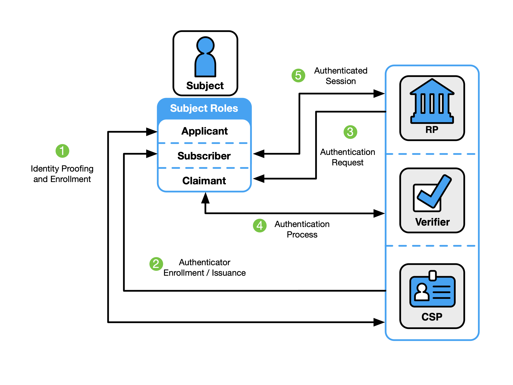
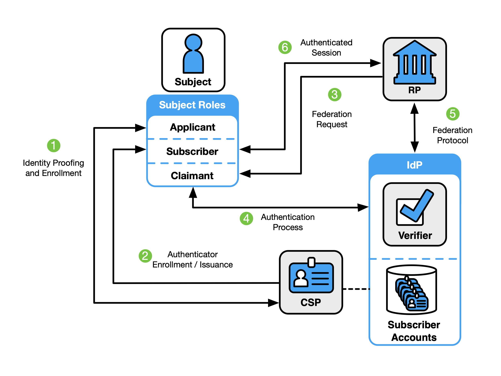

Tue, 26 Aug 2025 08:51:12 -0500
ABSTRACT
These guidelines cover the identity proofing, authentication, and federation of users (e.g., employees, contractors, or private individuals) who interact with government information systems over networks. They define technical requirements in each of the areas of identity proofing, enrollment, authenticators, management processes, authentication protocols, federation, and related assertions. They also offer technical recommendations and other informative text as helpful suggestions. The guidelines are not intended to constrain the development or use of standards outside of this purpose. This publication supersedes NIST Special Publication (SP) 800-63-3.
Keywords
assertions; authentication; authentication assurance; authenticator; credential service provider; digital authentication; identity proofing; federation; passwords; PKI.
Preface
This publication and its companion volumes — [SP800-63A], [SP800-63B], and [SP800-63C] — provide technical and process guidelines to organizations for the implementation of digital identity services.
Introduction
This section is informative.
The rapid proliferation of online services over the past few years has heightened the need for reliable, secure, and privacy-protective digital identity solutions. A digital identity is always unique in the context of an online service. However, a person could have multiple digital identities and, while a digital identity could relay a unique and specific meaning within the context of an online service, the real-life identity of the individual behind the digital identity might not be known. When confidence in a person’s real-life identity is not required to provide access to an online service, organizations can use anonymous or pseudonymous accounts. In all other use cases, a digital identity is intended to establish trust between the holder of the digital identity and the person, organization, or system interacting with the online service. However, this process can present challenges. There are multiple opportunities for mistakes, miscommunication, and attacks that fraudulently claim another person’s identity. Additionally, given the broad range of individual needs, constraints, capacities, and preferences, online services must be designed with flexibility and customer experience in mind to support broad and enduring participation and access to online services.
Digital identity risks are dynamic and exist along a continuum. Consequently, a digital identity risk management approach should seek to manage risks using outcome-based approaches that are designed to meet the organization’s unique needs. These guidelines define specific assurance levels that operate as baseline control sets. These assurance levels provide multiple benefits, including a starting point for organizations in their risk management journey and a common structure for supporting interoperability between different entities. It is, however, impractical to create assurance levels that can comprehensively address the entire spectrum of risks, threats, or considerations that an organization will face when deploying an identity solution. For this reason, these guidelines promote a risk-based approach to digital identity solution implementation rather than a compliance-oriented approach, and organizations are encouraged to tailor their control implementations based on the processes defined in these guidelines.
Additionally, risks associated with digital identity stretch beyond the potential impacts to the organization providing online services. These guidelines endeavor to robustly and explicitly account for risks to individuals, communities, and other organizations. Organizations should also consider how digital identity decisions might affect, or need to accommodate, the individuals who interact with the organization’s programs and services. Privacy and customer experience for individuals should be considered along with security. Additionally, organizations should consider their digital identity approach alongside other mechanisms for identity management, such as those used in call centers and in-person interactions. By taking a customer-centric and continuously informed approach to mission delivery, organizations have an opportunity to incrementally build trust with the populations they serve, improve customer experience, identify issues more quickly, and provide individuals with appropriate and effective redress options.
The composition, models, and availability of identity services have significantly changed since the first version of SP 800-63 was released, as have the considerations and challenges of deploying secure, private, and usable services to users. This revision addresses these challenges by presenting guidance and requirements based on the roles and functions that entities perform as part of the overall digital identity model.
Additionally, this publication provides instruction for credential service providers (CSPs), verifiers, and relying parties (RPs), to supplement the NIST Risk Management Framework [NISTRMF] and its component publications. It describes the risk management processes that organizations should follow to implement digital identity services and expands upon the NIST RMF by outlining how customer experience considerations should be incorporated. It also highlights the importance of considering impacts on enterprise operations and assets, individuals, and other organizations. Furthermore, digital identity management processes for identity proofing, authentication, and federation typically involve processing personal information, which can present privacy risks. Therefore, these guidelines include privacy requirements and considerations to help mitigate potential associated risks.
Finally, while these guidelines provide organizations with technical requirements and recommendations for establishing, maintaining, and authenticating the digital identity of subjects who access digital systems over a network, they also recommend integration with systems and processes that are often outside of the control of identity and IT teams. As such, these guidelines provide considerations to improve coordination with organizations and deliver more effective, modern, and customer-driven online services.
Scope and Applicability
These guidelines applies to all online services for which some level of assurance in a digital identity is required, regardless of the constituency (e.g., the public, business partners, and government employees and contractors). For this publication, “person” refers only to natural persons.
These guidelines primarily focus on organizational services that interact with external users, such as individuals accessing public benefits or private-sector partners accessing collaboration spaces. However, they also apply to federal systems accessed by employees and contractors. The Personal Identity Verification (PIV) of Federal Employees and Contractors standard [FIPS201], and its corresponding set of Special Publications and organization-specific instructions, extend these guidelines for the federal enterprise by providing additional technical controls and processes for issuing and managing Personal Identity Verification (PIV) Cards, binding additional authenticators as derived PIV credentials, and using federation architectures and protocols with PIV systems.
Online services not covered by these guidelines include those associated with national security systems as defined in [44 U.S.C. § 3552(b)(6)]. Private-sector organizations and state, local, and tribal governments whose digital processes require varying levels of digital identity assurance may consider the use of these standards where appropriate.
These guidelines address logical access to online systems, services, and applications. They do not specifically address physical access control processes. However, the processes specified in these guidelines can be applied to physical access use cases where appropriate. Additionally, these guidelines do not explicitly address some subjects including, but not limited to, machine-to-machine authentication, interconnected devices (e.g., Internet of Things [IoT] devices), or access to Application Programming Interfaces (APIs) on behalf of subjects.
How to Use This Suite of SPs
These guidelines support the mitigation of the negative impacts of errors that occur during the functions of identity proofing, authentication, and federation. Section 3, Digital Identity Risk Management, describes the risk assessment process and how the results of the risk assessment and additional context inform the selection of controls to secure the identity proofing, authentication, and federation processes. Controls are selected by determining the assurance level required to mitigate each applicable type of digital identity error for a particular service based on risk and mission.
Specifically, organizations are required to select an assurance level1 for each of the following functions:
- Identity Assurance Level (IAL) refers to identity proofing functions.
- Authentication Assurance Level (AAL) refers to authentication functions.
- Federation Assurance Level (FAL) refers to federation functions when the relying party (RP) is connected to a credential service provider (CSP) or an identity provider (IdP) through a federated protocol.
SP 800-63 is organized as the following suite of volumes:
- SP 800-63 Digital Identity Guidelines describes the digital identity models, risk assessment methodology, and processes for selecting assurance levels for identity proofing, authentication, and federation. SP 800-63 contains both normative and informative material.
- [SP800-63A]: provides requirements for identity proofing and the remote or in-person enrollment of applicants, who wish to gain access to resources at each of the three IALs. It details the responsibilities of CSPs with respect to establishing and maintaining subscriber accounts and binding CSP-issued or subscriber-provided authenticators to the subscriber account. SP 800-63A contains both normative and informative material.
- [SP800-63B] provides requirements for authentication processes that can be used at each of the three AALs, including choices of authenticators. It also provides recommendations on events that can occur during the lifetime of authenticators (e.g., invalidation in the event of loss or theft). SP 800-63B contains both normative and informative material.
- [SP800-63C] provides requirements on the use of federated identity architectures and assertions to convey the results of authentication processes and relevant identity information to an organization’s application. SP 800-63C contains both normative and informative material.
Enterprise Risk Management Requirements and Considerations
Effective enterprise risk management is multidisciplinary by design and involves the consideration of varied sets of factors and expectations. In a digital identity risk management context, these factors include, but are not limited to, information security, fraud, privacy, and customer experience. It is important for risk management efforts to weigh these factors as they relate to enterprise assets and operations, individuals, and other organizations.
During the process of analyzing factors that are relevant to digital identity, organizations might determine that measures outside of those specified in this publication are appropriate in certain contexts (e.g., where privacy or other legal requirements exist or where the output of a risk assessment leads the organization to determine that additional measures or alternative procedural safeguards are appropriate). Organizations, including federal agencies, can employ compensating or supplemental controls that are not specified in this publication. They can also consider partitioning the functionality of an online service to allow less sensitive functions to be available at a lower level of assurance to improve access without compromising security.
The considerations detailed below support enterprise risk management efforts and encourage informed and customer-centered service delivery. While this list of considerations is not exhaustive, it highlights a set of cross-cutting factors that are likely to impact decision-making associated with digital identity management.
Security, Fraud, and Threat Prevention
It is increasingly important for organizations to assess and manage digital identity security risks, such as unauthorized access due to impersonation. As organizations consult these guidelines, they should consider potential impacts to the confidentiality, integrity, and availability of information and information systems that they manage, and that their service providers and business partners manage, on behalf of the individuals and communities that they serve.
Federal agencies implementing these guidelines are required to meet statutory responsibilities, including those under the Federal Information Security Modernization Act (FISMA) of 2014 [FISMA] and related NIST standards and guidelines. NIST recommends that non-federal organizations implementing these guidelines follow comparable standards (e.g., ISO/IEC 27001) to ensure the secure operation of their digital systems.
FISMA requires federal agencies to implement appropriate controls to protect federal information and information systems from unauthorized access, use, disclosure, disruption, or modification. The NIST RMF [NISTRMF] provides a process that integrates security, privacy, and cyber supply chain risk management activities into the system development life cycle. It is expected that federal agencies and organizations that provide services under these guidelines have already implemented the controls and processes required under FISMA and associated NIST risk management processes and publications.
The controls and requirements encompassed by the identity, authentication, and federation assurance levels under these guidelines augment but do not replace or alter the information and information system controls determined under FISMA and the RMF.
As threats evolve, it is important for organizations to assess and manage identity-related fraud risks associated with identity proofing and authentication processes. As organizations consult these guidelines, they should consider the evolving threat environment, the availability of innovative anti-fraud measures in the digital identity market, and the potential impacts of identity-related fraud on their systems and users. This is particularly important for public-facing online services where the impact of identity-related fraud on digital government service delivery, public trust, and organization reputation can be substantial.
This version enhances measures to combat identity theft and identity-related fraud by repurposing IAL1 as a new assurance level, updating authentication risk and threat models to account for new attacks, providing new options for phishing-resistant authentication, introducing requirements to prevent automated attacks against enrollment processes, and preparing for new technologies (e.g., mobile driver’s licenses and verifiable credentials) that can leverage strong identity proofing and authentication.
Privacy
When designing, implementing, and managing digital identity systems, it is imperative to consider the potential of that system to create privacy-related problems for individuals when processing (e.g., collection, storage, use, and destruction) personal information and the potential impacts of problematic data actions. If a breach of personal information or a release of sensitive information occurs, organizations need to ensure that the privacy notices describe, in plain language, what information was improperly released and, if known, how the information was exploited.
Organizations need to demonstrate how organizational privacy policies and system privacy requirements have been implemented in their systems. These guidelines recommend that organizations take steps to implement digital identity risk management with privacy in mind, which can be supported by referencing:
- [NISTPF] NIST Privacy Framework, which enables privacy engineering practices that support privacy by design concepts and helps organizations protect individuals’ privacy
- [PrivacyAct] of 1974, which established fair information practices for the collection, maintenance, use, and disclosure of information about individuals that is maintained by federal agencies in systems of records
- [M-03-22] OMB Guidance for Implementing the Privacy Provisions of the E-Government Act of 2002, which requires the performance and public notification of privacy impact assessments (PIAs) that are required for processing or storing personal information
- [SP800-53] Security and Privacy Controls for Information Systems and Organizations, which lists privacy controls that can be implemented to mitigate the risks identified in the privacy risk and impact assessments
- [SP800-122] Guide to Protecting the Confidentiality of Personally Identifiable Information (PII), which assists federal agencies in understanding what personal information is; the relationship between protecting the confidentiality of personal information; privacy and the Fair Information Practices; and safeguards for protecting personal information
Furthermore, each volume of SP 800-63 contains a specific section that provides detailed privacy guidance and considerations for implementing the processes, controls, and requirements presented in that volume as well as normative requirements on data collection, retention, and minimization.
Customer Experience
It is essential that these guidelines provide organizations with the ability to create modern, streamlined, and responsive customer experiences. To do this, the guidelines allow organizations to factor in the capabilities and expectations of users when making decisions and trade-offs in the risk management process. Organizations that implement these guidelines must understand their user populations, capabilities, and limitations as part of setting an effective digital identity risk management strategy.
There have been several major additions to these guidelines to ensure responsive and effective customer experiences. In addition to adding new technologies to each of the volumes, as applicable, this volume introduces two key concepts:
- Control tailoring. Control tailoring allows organizations to make informed risk-based decisions to deploy technologies and processes that work for their users and adjust their baseline controls through informed decision-making to meet customer experience needs.
- Continuous improvement programs. Establishing a continuous evaluation program provides organizations with the ability to evaluate how well they are mitigating risks and meeting the needs of their users. Through metrics and cross-functional assessment programs, this guideline sets a foundation for a data-driven approach to providing effective, modern solutions that support organizations’ extensive user populations.
These two concepts are discussed in detail in Sec. 3 of this document.
As a part of improving customer experience, these guidelines also emphasize the need to provide options for users to “meet the customer where they are.” When coupled with a continuous improvement strategy and customer-centered design, this can help identify the opportunities, processes, business partners, and multi-channel identity proofing and service delivery methods that best support the needs of the populations that an organization serves.
Additionally, usability refers to the extent to which a system, product, or service can be used to achieve goals with effectiveness, efficiency, and satisfaction in a specified context of use. Usability supports the major objectives of customer experience, service delivery, and security, and requires an understanding of the people who interact with a digital identity system or process, as well as their unique capabilities and context of use.
Readers of this guideline should take a holistic approach to considering the interactions that each user will engage in throughout the process of enrolling in and authenticating to a service. Throughout the design and development of a digital identity system or process, it is important to conduct usability evaluations with representative users and perform realistic scenarios and tasks in appropriate contexts of use. Additionally, following usability guidelines and considerations can help organizations meet their customer experience goals. Digital identity management processes should be designed and implemented so that it is easy for users to do the right thing, hard to do the wrong thing, and easy to recover when the wrong thing happens.
\clearpage
Notations
This guideline uses the following typographical conventions in text:
- Specific terms in CAPITALS represent normative requirements. When these same terms are not in CAPITALS, the term does not represent a normative requirement.
- The terms “SHALL” and “SHALL NOT” indicate requirements to be followed strictly in order to conform to the publication and from which no deviation is permitted.
- The terms “SHOULD” and “SHOULD NOT” indicate that among several possibilities, one is recommended as particularly suitable without mentioning or excluding others, that a certain course of action is preferred but not necessarily required, or that (in the negative form) a certain possibility or course of action is discouraged but not prohibited.
- The terms “MAY” and “NEED NOT” indicate a course of action permissible within the limits of the publication.
- The terms “CAN” and “CANNOT” indicate a possibility and capability — whether material, physical, or causal — or, in the negative, the absence of that possibility or capability.
Document Structure
This document is organized as follows. Each section is labeled as either normative (i.e., mandatory for compliance) or informative (i.e., not mandatory).
- Section 1 introduces the document. This section is informative.
- Section 2 describes a general model for digital identity. This section is informative.
- Section 3 describes the digital identity risk model. This section is normative.
- The References section contains a list of publications that are cited in this document. This section is informative.
- Appendix A contains a selected list of abbreviations used in this document. This appendix is informative.
- Appendix B contains a glossary of selected terms used in this document. This appendix is informative.
- Appendix C contains a summarized list of changes in this document’s history. This appendix is informative.
-
When described generically or bundled, these guidelines will refer to IAL, AAL, and FAL as xAL. Each xAL has three assurance levels. ↩
Digital Identity Model
This section is informative.
Overview
These guidelines use digital identity models that reflect technologies and architectures that are currently available in the market. These models have a variety of entities and functions and vary in complexity. Simple models group functions (e.g., creating subscriber accounts, providing attributes) under a single entity. More complex models separate these functions among multiple entities.
The roles and functions found in these digital identity models include:
Subject: In these guidelines, a subject is a person and is represented by one of three roles, depending on where they are in the digital identity process.
- Applicant — A subject to be identity-proofed and enrolled.
- Subscriber — A subject who has successfully completed the identity proofing and enrollment process or who has been successfully authenticated to an online service.
- Claimant — A subject “making a claim” to be eligible for authentication.
Service provider: Service providers can perform any combination of functions involved in granting access to and delivering online services, such as a credential service provider, relying party, verifier, and identity provider.
Credential service provider (CSP): CSP functions include identity proofing applicants, enrolling them into their identity service, establishing subscriber accounts, and binding authenticators to those accounts. A subscriber account is the CSP’s established record of the subscriber, the subscriber’s attributes, and associated authenticators. CSP functions may be performed by an independent third party.
Relying party (RP): RPs provide online transactions and services and rely upon a verifier’s assertion of a subscriber’s identity to grant access to those services. When using federation, the RP accesses the information in the subscriber account through assertions from an identity provider (IdP).
Verifier: A verifier confirms the claimant’s identity by verifying the claimant’s possession and control of one or more authenticators using an authentication protocol. To do this, the verifier needs to confirm the binding of the authenticators with the subscriber account and check that the subscriber account is active.
Identity provider (IdP): When using federation, the IdP manages the subscriber’s primary authenticators and issues assertions derived from the subscriber account.
While presented as separate roles, the functions of the CSP, verifier, and IdP may be performed by a single entity or distributed across multiple entities, depending on the implementation (see Sec. 2.5).
Identity Proofing and Enrollment
[SP800-63A], Digital Identity Guidelines: Identity Proofing and Enrollment, provides general guidance information and normative requirements for the identity proofing and enrollment processes as well as IAL-specific requirements.
[SP800-63A] provides general information and normative requirements for the identity proofing and enrollment processes as well as requirements that are specific to IALs.
Figure 1 illustrates a common transaction sequence for the identity proofing and enrollment functions.
Identity proofing and enrollment begin when an applicant initiates identity proofing, often by attempting to access an online application served by the CSP. The CSP or its component service requests identity evidence and attributes from the applicant, which the applicant submits via an online or in-person transaction. The CSP resolves the user (i.e., uniquely distinguishes the user), validates the accuracy and authenticity of the evidence, and validates the accuracy of the attributes. If the applicant is successfully identity-proofed, they are enrolled in the identity service as a subscriber of that CSP. A unique subscriber account is then created, and one or more authenticators are registered to that account.
Subscribers have a responsibility to maintain control of their authenticators (e.g., guard against theft) and comply with CSP policies to remain in good standing with the CSP.
Fig. 1. Sample identity proofing and enrollment digital identity model

Subscriber Accounts
At the time of enrollment, the CSP establishes a subscriber account to uniquely identify each subscriber and record information about the subscriber and any authenticators bound to that subscriber account.
See Sec. 5 of [SP800-63A], subscriber accounts, for more information and normative requirements.
Authentication and Authenticator Management
[SP800-63B], Authentication and Authenticator Management, provides normative descriptions of permitted authenticator types, their characteristics (e.g., phishing resistance), and authentication processes appropriate for each AAL.
Authenticators
An authenticator is a means of demonstrating the control or possession of one or more factors in an authentication protocol. These guidelines define three types of authentication factors used for authentication:
- Something you know (e.g., a password)
- Something you have (e.g., a device containing a cryptographic key)
- Something you are (e.g., a fingerprint or other biometric characteristic data)
Single-factor authentication requires only one of the above factors, most often “something you know.” Multiple instances of the same factor still constitute single-factor authentication. For example, a user-generated PIN and a password do not constitute two factors as they are both “something you know.” Multi-factor authentication (MFA) refers to the use of more than one distinct factor.
This guideline specifies that authenticators always contain or comprise a secret. The secrets contained in an authenticator are based on either key pairs (i.e., asymmetric cryptographic keys) or shared secrets, including symmetric cryptographic keys, seeds for generating one-time passwords (OTP), and passwords. Asymmetric key pairs are comprised of a public key and a related private key. The private key is stored on the authenticator and is only available for use by the claimant who possesses and controls the authenticators. Symmetric keys generally are chosen at random, complex and long enough to thwart network-based guessing attacks, and stored in hardware or software that the subscriber controls.
Passwords used locally as an activation factor for a multi-factor authenticator are referred to as activation secrets. An activation secret is used to obtain access to a stored authentication key and remains within the authenticator and its associated user endpoint. An example of an activation secret would be the PIN used to activate a PIV card.
Biometric characteristics are unique, personal attributes that can be used to verify the identity of a person who is physically present at the point of authentication. This includes, facial features, fingerprints, and iris patterns, among others. While biometric characteristics cannot be used for single-factor authentication, they can be used as an authentication factor for multi-factor authentication in combination with a physical authenticator (i.e., something you have).
Some commonly used authentication methods do not contain or comprise secrets and are, therefore, not acceptable for use under these guidelines, such as:
- Knowledge-based authentication (KBA), where the claimant is prompted to answer questions that are presumably known only by the claimant, does not constitute an acceptable secret for digital authentication.
- A biometric characteristic does not constitute a secret and cannot be used as a single-factor authenticator.
Authentication Process
The authentication process enables an RP to trust that a claimant is who they say they are to some level of assurance. The sample authentication process in Fig. 2 shows interactions between the RP, a claimant, and a verifier/CSP. The verifier is a functional role and is frequently implemented in combination with the CSP, RP, or both (as shown in Fig. 4).
Fig. 2. Sample authentication process

A successful authentication process demonstrates that the claimant has possession and control of one or more valid authenticators that are bound to the subscriber’s identity. In general, this is done using an authentication protocol that involves an interaction between the verifier and the claimant, where the claimant uses one or more authenticators to generate the authenticator output to be sent to the verifier. The verifier verifies the output and passes a positive result to the RP. The RP then opens an authenticated session with the verified subscriber.
The exact nature of the interaction is important in determining the overall security of the system. Well-designed protocols protect the integrity and confidentiality of communication between the claimant and the verifier both during and after the authentication and can help limit the damage done by an attacker masquerading as a legitimate verifier (i.e., phishing).
Federation and Assertions
Normative requirements can be found in [SP800-63C], Federation and Assertions.
Section III of OMB [M-19-17], Enabling Mission Delivery through Improved Identity, Credential, and Access Management, directs agencies to support cross-government identity federation and interoperability. The term federation can be applied to several different approaches that involve the sharing of information between different trust domains, and may differ based on the kind of information that is being shared between the domains. These guidelines address the federation processes that allow for the conveyance of identity and authentication information based on trust agreements across a set of networked systems through federation assertions.
There are many benefits to using federated architectures including, but not limited to:
- Enhancing user experience (e.g., a subject can be identity-proofed once but their subscriber account used at multiple RPs)
- Reducing costs for both the subscriber (e.g., reduction in authenticators) and the organization (e.g., reduction in information technology infrastructure and a streamlined architecture)
- Minimizing data exposed to RPs by using pseudonymous identifiers and derived attribute values instead of copying account values to each application
- Supporting mission success, since organizations will need to focus fewer resources on complex identity management processes
While the federation process is generally the preferred approach to authentication when the RP and IdP are not administered together under a common security domain, federation can also be applied within a single security domain for a variety of benefits, including centralized account management and technical integration.
These guidelines are agnostic to the identity proofing, authentication, and federation architectures that an organization selects, and they allow organizations to deploy a digital identity scheme according to their own requirements. However, there are scenarios in which federation could be more efficient and effective than establishing identity services that are local to the organization or individual applications, such as:
- Potential users already have an authenticator at or above the required AAL.
- Multiple types of authenticators are required to cover all possible user communities.
- An organization does not have the necessary infrastructure to support the management of subscriber accounts (e.g., account recovery, authenticator issuance, help desk).
- There is a desire to allow primary authenticators to be added and upgraded over time without changing the RP’s implementation.
- There are different environments to be supported, since federation protocols are network-based and allow for implementation on a wide variety of platforms and languages.
- Potential users come from multiple communities, each with its own existing identity infrastructure.
- The organization needs the ability to centrally manage account life cycles, including account revocation and the binding of new authenticators.
\clearpage
An organization might want to consider accepting federated identity attributes if any of the following apply:
- Pseudonymity is required, necessary, feasible, or important to stakeholders accessing the service.
- Access to the service requires a defined list of attributes.
- Access to the service requires at least one derived attribute value.
- The organization is not the authoritative or issuing source for required attributes.
- Attributes are required temporarily during use (e.g., to make an access decision), and the organization does not need to retain the data.
Examples of Digital Identity Models
The entities and interactions that comprise the non-federated digital identity model are illustrated in Fig. 3. The general-purpose federated digital identity model is illustrated in Fig. 4, and a federated digital identity model with a subscriber-controlled wallet is illustrated in Fig. 5.
In the two cases described in Fig. 3 and Fig. 4, the verifier does not always need to communicate in real time with the CSP to complete the authentication activity (e.g., digital certificates can be used). Therefore, the line between the verifier and the CSP represents a logical link between the two entities. In some implementations, the verifier, RP, and CSP functions are distributed. However, if these functions reside on the same platform, the interactions between the functions are signals between applications or application modules that run on the same system rather than using network protocols.
Non-Federated Digital Identity Model
Fig. 3. Non-federated digital identity model example

Figure 3 shows an example of a common sequence of interactions in the non-federated model. Other sequences could also achieve the same functional requirements. One common sequence of interactions for identity proofing and enrollment activities is represented as follows:
- Step 1: An applicant applies to a CSP through an identity proofing and enrollment process. The CSP identity-proofs that applicant.
- Step 2: Upon successful identity proofing, the applicant is enrolled into the identity service as a subscriber.
- A subscriber account and corresponding authenticators are established between the CSP and the subscriber. The CSP maintains the subscriber account, its status, and the enrollment data. The subscriber maintains their authenticators.
Steps 3 through 5 can immediately follow steps 1 and 2 or be done at a later time. The usual sequence of interactions involved in using one or more authenticators to perform digital authentication in the non-federated model is as follows:
- Step 3: The claimant initiates an online interaction with the RP and the RP requests that the claimant authenticate.
- Step 4: The claimant proves possession and control of the authenticators to the verifier function through an authentication process:
- The verifier interacts with the CSP to verify the binding of the claimant’s identity to their authenticators in the subscriber account and to optionally obtain additional subscriber attributes.
- The CSP or verifier functions of the service provider give information about the subscriber. The RP requests the attributes that it requires from the CSP. The RP optionally uses this information to make authorization decisions.
- Step 5: An authenticated session is established between the subscriber and the RP.
Federated Digital Identity Model With General-Purpose IdP
Fig. 4. Federated digital identity model example

Figure 4 shows an example of those same common interactions in a federated model.
- Step 1: An applicant applies to a CSP through an identity proofing and enrollment process. The CSP identity-proofs that applicant.
- Step 2: Upon successful identity proofing, the applicant is enrolled in the identity service as a subscriber.
- A subscriber account and corresponding authenticators are established between the CSP and the subscriber.
- The IdP is provisioned either directly by the CSP or indirectly through access to attributes of the subscriber account. The CSP maintains the subscriber account, its status, and the enrollment data collected in accordance with the records retention and disposal requirements described in Sec. 3.1 of [SP800-63A]. The subscriber maintains their authenticators. The IdP maintains its view of the subscriber account, any federated identifiers assigned to the subscriber account, and any policies and decisions regarding the release of attributes and information to RPs.
The usual sequence of interactions involved in using one or more authenticators in the federated model to perform digital authentication is as follows:
- Step 3: The RP requests that the claimant authenticate and requests any attributes needed from the IdP to make access or authorization decisions. This triggers a request for federated authentication to the IdP.
- Step 4: The claimant proves possession and control of the authenticators to the verifier function of the IdP through an authentication process.
- The binding of the claimant’s authenticators are verified with those bound to the claimed subscriber account and optionally to obtain additional subscriber attributes.
- Step 5: The RP and the IdP communicate through a federation protocol. The IdP provides an assertion and any necessary additional attributes to the RP through a federation protocol. The RP verifies the assertion to establish confidence in the identity and attributes of a subscriber for access to an online service at the RP. RPs use a subscriber’s federated identity (pseudonymous or non-pseudonymous), IAL, AAL, FAL, and other factors to make authorization decisions.
- Step 6: An authenticated session is established between the subscriber and the RP.
Federated Digital Identity Model with Subscriber-Controlled Wallet
Fig. 5. Federated Digital Identity Model With Subscriber-Controlled Wallet Example
Figure 5 shows an example of the interactions in a federated digital identity model in which the subscriber controls a device with software (i.e., a digital wallet) or an account with a cloud service provider (i.e., a hosted-wallet) that acts as the IdP. In the terminology of the “three-party model,” the CSP is the issuer, the IdP is the holder (i.e., the users device or agent operating on their behalf), and the RP is the verifier. In this model, it is common for the RP to establish a trust agreement with the CSP using a federation authority, as defined in Sec. 3.5 of [SP800-63C]. This arrangement allows the RP to accept assertions from the subscriber-controlled wallet without needing a direct trust relationship with the wallet, as described in Sec. 5 of [SP800-63C].
- Step 1: An applicant applies to a CSP identity proofing and enrollment process.
- Step 2: Upon successful identity proofing, the applicant goes through an onboarding process and is enrolled in the identity service as a subscriber.
- Step 3: The subscriber-controlled wallet is onboarded by the CSP, allowing the wallet to act in the role of IdP in later steps.
- The subscriber authenticates to the CSP’s issuance functionality by authenticating to the subscriber account or completes an abbreviated proofing process to demonstrate that they are the same user represented by the subscriber account.
- The subscriber activates the subscriber-controlled wallet using an activation factor.
- The wallet generates or chooses a signing key and corresponding verification key, including proof of a key held by the wallet.
- The CSP creates one or more attribute bundles that include subscriber attributes and the wallet’s verification key (or a reference to that key).
- The CSP issues the attribute bundle with corresponding verification key into the subscriber-controlled wallet.
Other protocols and specifications often refer to attribute bundles as credentials. These guidelines use the term credentials to refer to a different concept. To avoid a conflict, the term attribute bundle is used within these guidelines. Normative requirements for attribute bundles can be found in Sec. 3.12.1 of [SP800-63C].
\clearpage
The usual sequence of interactions involved in providing an assertion to the RP from a subscriber-controlled wallet is as follows:
- Step 4: The RP requests that the claimant authenticate. This triggers a request for federated authentication to the wallet.
- Step 5: The claimant proves possession and control of the subscriber-controlled wallet.
- The claimant activates the wallet using an activation factor or authenticates to a hosted service if the subscriber-controlled wallet is hosted by a service provider.
- The wallet prepares an assertion that includes the attribute bundle provided by the CSP for the subscriber account.
- Step 6: The RP and the wallet communicate through a federation protocol. The wallet provides an assertion, the CSP-signed attribute bundles and optional additional attributes to the RP through a federation protocol. The RP verifies the assertion to establish confidence in the identity and attributes of a subscriber for access to an online service at the RP. RPs use a subscriber’s federated identity (pseudonymous or non-pseudonymous), IAL, AAL, FAL, and other factors to make authorization decisions.
- Step 7: An authenticated session is established between the subscriber and the RP.
Digital Identity Risk Management
This section is normative.
This section describes the methodology for assessing digital identity risks associated with online services, including residual risks to users of the online service, the service provider organization, and its mission and business partners. It offers guidance on selecting usable, privacy-enhancing security, and anti-fraud controls that mitigate those risks. Additionally, it emphasizes the importance of continuously evaluating the performance of the selected controls.
The Digital Identity Risk Management (DIRM) process focuses on the identification and management of risks according to two dimensions: (1) risks that result from operating the online service that might be addressed by an identity system and (2) additional risks that are introduced as a result of implementing the identity system.
The first dimension of risk informs initial assurance level selections and seeks to identify risks associated with a compromise of the online service that might be addressed by an identity system. For example:
- Identity proofing: Negative impacts that could reasonably be expected if an imposter were to gain access to a service or receive a credential using the identity of a legitimate user (e.g., an attacker successfully impersonates someone)
- Authentication: Negative impacts that could reasonably be expected if a false claimant accessed an account that was not rightfully theirs (e.g., an attacker who compromises or steals an authenticator), often referred to as an account takeover attack
- Federation: Negative impacts that could reasonably be expected if the wrong subject successfully accessed an online service, system, or data (e.g., compromising or replaying an assertion)
If there are risks associated with a compromise of the online service that could be addressed by an identity system, an initial assurance level is selected and the second dimension of risk is then considered.
The second dimension of risk seeks to identify the risks posed by the identity system itself and informs the tailoring process. Tailoring provides a process to modify an initially assessed assurance level, implement compensating or supplemental controls, or modify selected controls based on ongoing detailed risk assessments in areas such as privacy, usability, and resilience to real-world threats.
Examples of the types of impact that can result from risks introduced by the identity system itself include:
- Identity proofing: Impacts of not successfully identity proofing and enrolling a legitimate subject due to barriers faced by the subject throughout the process of identity proofing, falling victim to a breach of information that was collected and retained to support identity proofing processes, or the initial IAL failing to completely address specific threats, threat actors, and fraud
- Authentication: Impacts of failing to authenticate the correct subject due to barriers faced by the subject in presenting their authenticator, including barriers due to usability issues; the initial AAL failing to completely address targeted account takeover models or specific authenticator types fail to mitigate anticipated attacks
- Federation: Impacts of releasing real subscriber attributes to the wrong online service or system or releasing incorrect or fake attributes to a legitimate RP
The outcomes of the DIRM process depend on the role that an entity plays within the digital identity model.
- For relying parties, the intent of this process is to determine the assurance levels and any tailoring required to protect online services and the applications, transactions, and systems that comprise or are impacted by those services. This directly contributes to the selection, development, and procurement of CSP services. Federal RPs SHALL implement the DIRM process for all online services.
- For credential service providers and identity providers, the intent of this process is to design service offerings that meet the requirements of the defined assurance levels, continuously guard against compromises to the identity system, and meet the needs of RPs. Whenever a service offering deviates from normative guidance, those deviations SHALL be clearly communicated to the RPs that utilize the service.
CSPs and IdPs are expected to offer services at assurance levels that are requested by the RPs they serve. However, CSPs and IdPs that choose to deviate from this guideline or augment their services are expected to conduct an abbreviated digital identity risk assessment and document their modifications in a Digital Identity Acceptance Statement that is provided to RPs (see Sec. 3.4.4).
This process augments the risk management processes required by [FISMA]. The results of the DIRM impact assessment for the online service may be different from the FISMA impact level for the underlying application or system. Identity process failures can result in different levels of impact for various user groups. For example, the overall assessed FISMA impact level for a payment system may result in a ‘FISMA Moderate’ impact category because sensitive financial data is being processed by the system. However, for individuals who are making guest payments where no persistent account is established, the authentication and proofing impact levels may be lower. Agency authorizing officials SHOULD require documentation that demonstrates adherence to the DIRM process as a part of the authority to operate (ATO) for the underlying information system that supports an online service. Agency authorizing officials SHOULD require documentation from CSPs that demonstrates adherence to the DIRM process as part of procurement or ATO processes for integration with CSPs.
These guidelines use the term FISMA impact level; other NIST RMF publications also use the term system impact level to refer to such impact categorization.
There are 5 steps in the DIRM process:
- Define the online service: As a starting point, the organization documents a description of the online service in terms of its functional scope, the user groups it is intended to serve, the types of online transactions available to each user group, and the underlying data that the online service processes through its interfaces. If the online service is one element of a broader business process, its role is documented, as are the uses of any data collected and processed by the online service. Additionally, an organization needs to determine the entities that will be impacted by the online service and the broader business process of which it is a part. The outcome is a description of the online service, its users, and the entities that may be impacted by its functionality.
- Conduct initial impact assessment: In this step, organizations assess the impacts of a compromise of the online service that might be addressed by an identity system (i.e., identity proofing, authentication, or federation). Each function of the online service is assessed against a defined set of harms and impact categories. Each user group of the online service is considered separately based on the transactions available to that user group (i.e., the permissions that the group is granted relative to the data and functions of the online service). The outcome of this step is a documented set of impact categories and associated impact levels that are determined by considering the transactions available to each user group of the online service.
- Select initial assurance levels: In this step, the impact categories and impact levels are evaluated to determine the initial assurance levels to protect the online service from unauthorized access and fraud. Using the assurance levels, the organization identifies the baseline controls for the IAL, AAL, and FAL for each user group based on the requirements in companion volumes [SP800-63A], [SP800-63B], and [SP800-63C], respectively. The outcome of this step is an identified initial IAL, AAL, and FAL, as applicable, for each user group.
- Tailor and document assurance level determinations: In this step, detailed assessments are conducted or leveraged to determine the potential impact of the initially selected assurance levels and their associated controls on privacy, customer experience, and resistance to the current threat environment. Tailoring may result in a modification of the initially assessed assurance level, the identification of compensating or supplemental controls (see Sec. 3.4.2 and Sec. 3.4.3), or both. All assessments and final decisions are documented and justified. The outcome is a Digital Identity Acceptance Statement (see Sec. 3.4.4) with a defined and implementable set of assurance levels and a final set of controls for the online service.
- Continuously evaluate and improve: In this step, information on the performance of the identity management approach is gathered and evaluated. This evaluation considers a diverse set of factors, including business impacts, effects on fraud rates, and impacts on user communities. This information is crucial for determining whether the selected assurance levels and controls meet mission, business, security, and — where applicable — program integrity needs. It also helps monitor for unintended harms that impact privacy and access. Opportunities for improvement should also be considered by closely monitoring the evolving threat landscape and investigating new technologies and methodologies that can counter those threats, improve customer experience, or enhance privacy. The outcomes of this step are performance metrics, documented and transparent processes for evaluation and redress, and ongoing improvements to the identity management approach.
Fig. 6. High-level diagram of the DIRM Process Flow

Figure 6 illustrates the major actions and outcomes for each step of the DIRM process flow. While presented as a stepwise approach, there can be many points in the process that require divergence from the sequential order, including the need for iterative cycles between initial task execution and revisiting tasks. For example, the introduction of new regulations or requirements while an assessment is in progress may require organizations to revisit a step in the process. Additionally, new functionalities, changes in data usage, and changes to the threat environment may require an organization to revisit steps in the DIRM process at any point, including potentially modifying the assurance levels and/or the related controls of the online service.
Organizations SHOULD adapt and modify this overall approach to meet organizational processes, governance, and enterprise risk management practices. At a minimum, organizations SHALL execute and document each step and complete and document the normative mandates and outcomes of each step, regardless of any organization-specific processes or tools used in the overall DIRM process. Additionally, organizations SHOULD consult with a representative sample of the online service’s user population to inform the design and performance evaluation of the identity management system.
Define the Online Service
The purpose of defining the online service is to understand its functionality and establish a common understanding of its context, which will inform subsequent steps of the DIRM process. The role of the online service is contextualized as part of the broader business environment and associated processes, resulting in a documented description of the scope of the online service, user groups and their expectations, data processed, impacted entities, and other pertinent details.
RPs SHALL develop a description of the online service that includes, at minimum:
- The organizational mission and business objectives supported by the online service
- The mission and business partner dependencies associated with the online service
- Legal, regulatory, and contractual requirements, including privacy obligations that apply to the online service
- The functionality of the online service and the data that it is expected to process
- User groups that need to have access to the online service as well as the types of online transactions and access privileges available to each user group
- The set of entities (to include users of the online service, organizations, and populations served) that will be impacted by the online service and the broader business process of which it is a part
- The results of any preexisting DIRM assessments (as an input) and the current state of any preexisting identity technologies (i.e., proofing, authentication, or federation)
- The estimated availability of the types of identity evidence required for identity proofing across all user groups served
It is imperative to consider unexpected and undesirable impacts, as well as the scale of impact, on different entities that result from an unauthorized user gaining access to the online service due to a failure of the digital identity system. For example, if an attacker obtained unauthorized access to an online service that controls a power plant, the actions taken by the bad actor could have devastating environmental impacts on the local populations that live near the facility and cause power outages for the localities served by the plant.
It is important to differentiate between user groups and impacted entities, as described in this document. The online service will allow access to a set of users who may be partitioned into a few user groups based on the kind of functionality that is offered to that user group. For example, an online income tax filing and review service may have the following user groups: (1) citizens who need to check the status of their personal tax returns, (2) tax preparers who file tax returns on behalf of their clients, and (3) system administrators who assign privileges to different groups of users or create new user groups as needed. Impacted entities include all those who could face negative consequences in the event of a digital identity system failure. This will likely include members of the user groups but may also include those who never directly use the system.
Accordingly, the scope of impact assessments SHALL include individuals who use the online application as well as the organization itself. Additionally, organizations SHALL identify other entities (e.g., mission partners, communities, and those identified in [SP800-30]) that need to be specifically included based on mission and business needs. At a minimum, organizations SHALL document all impacted entities (both internal and external to the organization) when conducting their impact assessments.
The output of this step is a documented description of the online service, including a list of the user groups and other entities that are impacted by the functionality provided by the online service. This information will serve as a basis and establish the context for effectively applying the impact assessments detailed in the following sections.
Conduct Initial Impact Assessment
This step of the DIRM process addresses the first dimension of risk by identifying the risks to the online service that might be addressed by an identity system.
The purpose of the initial impact assessment is to identify the potential adverse impacts of failures in identity proofing, authentication, and federation that are specific to an online service, yielding an initial set of assurance levels. RPs SHOULD consider historical data and results from user focus groups when performing this step. The impact assessment SHALL include:
- Identifying a set of impact categories and the potential harms for each impact category,
- Identifying the levels of impact, and
- Assessing the level of impact for each user group.
The level of impact for each user group identified in Sec. 3.1 SHALL be considered separately based on the transactions available to that user group. This gives organizations maximum flexibility in selecting and implementing assurance levels that are appropriate for each user group. While impacts to user groups, the organization, and other entities are primary considerations for impact assessments, organizations SHOULD also consider scale (e.g., number of persons impacted by transactions).
The output of this assessment is a defined impact level (i.e., Low, Moderate, or High) for each user group. This serves as the primary input to the initial assurance level selection.
Identify Impact Categories and Potential Harms
While an online service has a discrete set of users and user groups that authenticate to access the functionality provided by the service, there may be a much larger set of entities that are impacted when imposters and attackers obtain unauthorized access to the online service due to errors in identity proofing, authentication, or federation. In Sec. 3.1, such impacted entities are identified and documented as a part of defining the online service.
In this step, organizations identify the categories of impact that are applicable to the impacted entities for a given online service. At a minimum, organizations SHALL include the following impact categories in their impact assessments:
- Degradation of mission delivery
- Damage to trust, standing, or reputation
- Unauthorized access to information
- Financial loss or liability
- Loss of life or danger to human safety, human health, or environmental health
Organizations SHOULD include additional impact categories, as appropriate, based on their mission and business objectives. Each impact category SHALL be documented and consistently applied when implementing the DIRM process across different online services offered by the organization.
Harms refer to any adverse effects that would be experienced by an impacted entity. They provide a means to effectively understand the impact categories and how they may apply to specific entities impacted by the online service. For each impact category, organizations SHALL consider potential harms for each of the impacted entities identified in Sec. 3.1.
Examples of harms associated with each category include:
- Degradation of mission delivery:
- Harms to individuals may include the inability to access government services or benefits for which they are eligible.
- Harms to the organization (including the organization offering the online service and organizations supported by the online service) may include the inability to perform current mission/business functions in a sufficiently timely manner, with sufficient confidence and/or correctness, or within planned resource constraints, or the inability or limited ability to perform mission/business functions in the future.
- Damage to trust, standing, or reputation:
- Harms to individuals may include damage to image or reputation as a result of impersonation.
- Harms to the organization may include damage to reputation resulting in the fostering of a negative image, the deterioration of existing trust relationships, or the inability to forge potential new trust relationships in the future.
- Unauthorized access to information:
- Harms to individuals may include the breach of personal information or other sensitive information that may result in secondary harms, such as financial loss, loss of life, physical or psychological injury, impersonation, identity theft, or persistent inconvenience.
- Harms to the organization may include the exfiltration, deletion, degradation, or exposure of intellectual property or the unauthorized disclosure of other information assets, such as classified materials or controlled unclassified information (CUI).
- Financial loss or liability:
- Harms to individuals may include debts incurred or assets lost as a result of fraud or other harm, damage to or loss of credit, actual or potential loss of employment or sources of income, loss of housing, and/or other financial loss.
- Harms to the organization may include costs related to fraud or other criminal activity, loss of assets, devaluation, or loss of business.
- Loss of life or danger to human safety, human health, or environmental health:
- Harms to individuals may include death or damage to physical well-being that may result in secondary harms, such as damage to mental or emotional well-being, or impact on environmental health that could result in the uninhabitability of the local environment and require intervention to address potential or actual damage.
- Harms to the organization may include damage to or loss of the organization’s workforce or damage to the surrounding environment and the subsequent impact of unsafe conditions.
The outcome of this activity is a list of impact categories and harms that will be used to assess adverse consequences for impacted entities.
Identify Potential Impact Levels
In this step, the organization assesses the potential level of impact caused by an unauthorized user gaining access to the online service for each of the impact categories selected by the organization (from Sec. 3.2.1). Impact levels are assigned using one of the following potential impact values:
- Low: Expected to have a limited adverse effect
- Moderate: Expected to have a serious adverse effect
- High: Expected to have a severe or catastrophic adverse effect
Each user group can have a distinct set of privileges and functionalities through the online service. Hence, it is necessary to consider the adverse consequences for each set of impacted entities in each of the impact categories, as a result of an intruder obtaining unauthorized access as a member of a particular user group. To provide a more objective basis for impact level assignments, organizations SHOULD develop thresholds and examples for the impact levels for each impact category. Where this is done, particularly with specifically defined quantifiable values, these thresholds SHALL be documented and used consistently in the DIRM assessments across an organization to allow for a common understanding of risks.
Examples of potential impacts in each of the impact categories include:
- Degradation of mission delivery:
- Low: Expected to result in limited mission capability degradation such that the organization is still able to perform its primary functions but with some reduced effectiveness
- Moderate: Expected to result in serious mission capability degradation such that the organization is still able to perform its primary functions but with significantly reduced effectiveness
- High: Expected to result in severe or catastrophic mission capability degradation or loss over a duration such that the organization is unable to perform one or more of its primary functions
- Damage to trust, standing, or reputation:
- Low: Expected to result in limited, short-term inconvenience, distress, or embarrassment to any party
- Moderate: Expected to result in serious short-term or limited long-term inconvenience, distress, or damage to the standing or reputation of any party
- High: Expected to result in severe or serious long-term inconvenience, distress, or damage to the standing or reputation of any party or many individuals
- Unauthorized access to information:
- Low: Expected to have a limited adverse effect on organizational operations, organizational assets, or individuals, as defined in [FIPS199]
- Moderate: Expected to have a serious adverse effect on organizational operations, organizational assets, or individuals, as defined in [FIPS199]
- High: Expected to have a severe or catastrophic adverse effect on organizational operations, organizational assets, or individuals, as defined in [FIPS199]
- Financial loss or financial liability:
- Low: Expected to result in limited financial loss or liability to any party
- Moderate: Expected to result in a serious financial loss or liability to any party
- High: Expected to result in severe or catastrophic financial loss or liability to any party
- Loss of life or danger to human safety, human health, or environmental health:
- Low: Expected to result in a limited impact on human safety or health that resolves on its own or with a minor amount of medical attention or a limited impact on environmental health that requires at most minor intervention to prevent further damage or reverse existing damage
- Moderate: Expected to result in a serious impact on human safety or health that requires significant medical attention, serious impact on environmental health that results in a period of uninhabitability and requires significant intervention to prevent further damage or reverse existing damage, or the compounding impacts of multiple low-impact events
- High: Expected to result in a severe or catastrophic impact on human safety or health, such as severe injury, trauma, or death, a severe or catastrophic impact on environmental health that results in long-term or permanent uninhabitability and requires extensive intervention to prevent further damage or reverse existing damage, or the compounding impacts of multiple moderate impact events
This guideline provides three impact levels. However, organizations MAY define more granular impact levels and develop their own methodologies for their initial impact assessment activities.
Impact Analysis
The impact analysis considers the level of impact (i.e., Low, Moderate, or High) of compromises of any of the identity system functions (i.e., identity proofing, authentication, and federation) that results in an intruder obtaining unauthorized access to the online service as a member of a particular user group, and initiating transactions that cause negative effects on impacted entities. The impact analysis considers the following dimensions:
- User groups (see Sec. 3.1)
- Impacted entities (see Sec. 3.1)
- Impact categories (see Sec. 3.2.1)
- Impact levels (see Sec. 3.2.2)
The impact analysis SHALL consider the level of impact for each impact category for each type of impacted entity if an intruder obtains unauthorized access as a member of each user group. Because different sets of transactions are available to each user group, it is important to consider each user group separately for this analysis.
For example, for an online service that allows for the control, operation, and monitoring of a water treatment facility, each group of users (e.g., technicians who control and operate the facility, auditors and monitoring officials, system administrators) is considered separately based on the transactions available to that user group through the online service. The impact analysis assesses the level of impact (i.e., Low, Moderate or High) on various impacted entities (e.g., citizens who drink the water, the organization that owns the facility, auditors, monitoring officials) for each of the impact categories being considered if a bad actor obtains unauthorized access to the online service as a member of a user group.
The impact analysis SHALL be performed for each user group that has access to the online service. For each impact category, the impact level is estimated for each impacted entity as a result of a compromise of the online service caused by failures in the identity management functions.
If there is no harm or impact for a given impact category for any entity, the impact level can be marked as None.
The output of this impact analysis is a set of impact levels for each user group that SHALL be documented in a suitable format for further analysis in accordance with Sec. 3.4.
Determine the Combined Impact Level for Each User Group
The impact assessment levels for each user group are combined to establish a single impact level to represent the risks to impacted entities from a compromise of identity proofing, authentication, and/or federation functions for that user group.
Organizations can apply a variety of methods for this combinatorial analysis, such as:
- Using a high-water mark approach across the various impact categories and impacted entities to derive the effective impact level
- Assigning different weights to different impact categories and/or impacted entities and taking an average to derive the effective impact level
- Some other combinatorial logic that aligns with the organization’s mission and priorities
Organizations SHALL document the approach they use to combine their impact assessment into an overall impact level for each of their defined user groups and SHALL apply it consistently across all of its online services. At the conclusion of the combinatorial analysis, organizations SHALL document the impact for each user group.
The outcome of this step is an effective impact level for each user group due to a compromise of the identity management system functions (i.e., identity proofing, authentication, federation).
Select Initial Assurance Levels and Baseline Controls
The effective impact level (i.e., Low, Moderate, or High) serves as a primary input to the process of selecting the initial assurance level for each user group (see Sec. 3.3.1) to identify the corresponding set of baseline digital identity controls from the requirements and guidelines in the companion volumes [SP800-63A], [SP800-63B], and [SP800-63C]. The resulting initial assurance level for each user group applies to all three digital identity system functions (i.e., identity proofing, authentication, and federation).
The initial set of selected digital identity controls and processes will be assessed and tailored in Step 4 based on potential risks generated by the identity management system.
Assurance Levels
Depending on the functionality and deployed architecture of the online service, the support of one or more of the identity management functions (i.e., identity proofing, authentication, and federation) may be required. The strength of these functions is described in terms of assurance levels. The RP SHALL identify the types of assurance levels that apply to their online service from the following:
- IAL: The robustness of the identity proofing process to determine the identity of an individual. The IAL is selected to mitigate risks that result from potential identity proofing failures.
- AAL: The robustness of the authentication process itself and the binding between an authenticator and a specific individual’s identifier. The AAL is selected to mitigate risks that result from potential authentication failures.
- FAL: The robustness of the federation process used to communicate authentication and attribute information to an RP from an IdP. The FAL is selected to mitigate risks that result from potential federation failures.
Assurance Level Descriptions
A summary of each of the xALs is provided below. While high-level descriptions of the assurance levels are provided in this subsection, readers of this guideline are encouraged to refer to companion volumes [SP800-63A], [SP800-63B], and [SP800-63C] for normative guidelines and requirements for each assurance level.
Identity Assurance Level
-
IAL1: IAL1 supports the real-world existence of the claimed identity and provides some assurance that the applicant is associated with that identity. Core attributes are obtained from identity evidence or self-asserted by the applicant. All core attributes are validated against authoritative or credible sources, and steps are taken to link the attributes to the person undergoing the identity proofing process.
-
IAL2: IAL2 requires collecting additional evidence and a more rigorous process for validating the evidence and verifying the identity.
-
IAL3: IAL3 adds the requirement for a trained CSP representative (i.e., proofing agent) to interact directly with the applicant, as part of an on-site attended identity proofing session, and the collection of at least one biometric.
Table 1 describes the control objectives (i.e., attack protections) for each identity assurance level.
| IAL | Control Objectives | User Profile |
|---|---|---|
| IAL1 | Limit highly scalable attacks. Protect against synthetic identity. Protect against attacks that use compromised personal information. | Access to personal information is required but limited. User actions are limited (e.g., viewing and making modifications to individual personal information). Fraud cannot be directly perpetrated through available user functions. Users cannot receive payments until an offline or manual process is conducted. |
| IAL2 | Limit scaled and targeted attacks. Protect against basic evidence falsification and theft. Protect against basic social engineering. | Users can view and change financial information (e.g., a direct deposit location). Individuals can directly perpetrate financial fraud through the available application functionality. A user can view or modify other users’ personal information. Users have visibility into or access to proprietary information. |
| IAL3 | Limit sophisticated attacks. Protect against advanced evidence falsification, theft, and repudiation. Protect against advanced social engineering attacks. | Users have direct access to multiple highly sensitive records; administrator access to servers, systems, or security data; the ability to access large sets of data that may reveal sensitive information about one or many users; or access that could result in a breach that would constitute a major incident under OMB guidance. |
Authentication Assurance Level
-
AAL1: AAL1 provides basic confidence that the claimant controls an authenticator that is bound to the subscriber account. AAL1 requires either single-factor or multi-factor authentication using a wide range of available authentication technologies. Verifiers are expected to make multi-factor authentication options available at AAL1 and encourage their use. Successful authentication requires the claimant to prove possession and control of the authenticator through a secure authentication protocol.
-
AAL2: AAL2 provides high confidence that the claimant controls one or more authenticators that are bound to the subscriber account. Proof of the possession and control of two distinct authentication factors is required through the use of secure authentication protocols. Approved cryptographic techniques are required.
-
AAL3: AAL3 provides very high confidence that the claimant controls authenticators that are bound to the subscriber account. Authentication at AAL3 is based on the proof of possession of a key through the use of a cryptographic protocol and either an activation factor or a password. AAL3 authentication requires the use of a public-key cryptographic authenticator with a non-exportable private key that provides phishing resistance. Approved cryptographic techniques are required.
Table 2 describes the control objectives (i.e., attack protections) for each authentication assurance level.
| AAL | Control Objectives | User Profile |
|---|---|---|
| AAL1 | Provide minimal protections against attacks. Deter password-focused attacks. | No personal information is available to any users, but some profile or preference data maybe retained to support usability and the customization of applications. |
| AAL2 | Require multifactor authentication. Offer phishing-resistant options. | Individual personal information can be viewed or modified by users. Limited proprietary information can be viewed by users. |
| AAL3 | Require phishing resistance and verifier compromise protections. | Highly sensitive information can be viewed or modified. Multiple proprietary records can be viewed or modified by users. Privileged user access could result in a breach that would constitute a major incident under OMB guidance. |
Federation Assurance Level
-
FAL1: FAL1 provides a basic level of protection for federation transactions and supports a wide range of use cases and deployment decisions.
-
FAL2: FAL2 provides a high level of protection for federation transactions and additional protection against a variety of attacks against federated systems, including attempts to inject assertions into a federated transaction.
-
FAL3: FAL3 provides a very high level of protection for federation transactions and establishes very high confidence that the information communicated in the federation transaction matches what was established by the CSP and IdP.
Table 3 describes the control objectives (i.e., attack protections) for each federation assurance level.
| FAL | Control Objectives | User Profile |
|---|---|---|
| FAL1 | Protect against forged assertions. | No sensitive personal information is available to any users but some profile or preference data may be retained to support usability or the customization of applications. |
| FAL2 | Protect against forged assertions and injection attacks. | Users can access personal information and other sensitive data with appropriate authentication assurance levels (e.g., AAL2 or above). |
| FAL3 | Protect against IdP compromise. | Federation primarily supports attribute exchange. Users have access to classified or highly sensitive information or services that could result in a breach that would constitute a major incident under OMB guidance. |
\clearpage
Initial Assurance Level Selection
Organizations SHALL develop and document a process and governance model for selecting initial assurance levels and controls based on the potential impacts of failures in the digital identity system. The following subsections provide guidance on the major elements to consider in the process for selecting initial assurance levels.
The overall impact level for each user group is used as the basis for selecting the initial assurance level and related technical and process controls for the online service under assessment based on the impacts of failures within the digital identity functions. The initial assurance levels and controls can be further assessed and tailored in the next step of the DIRM process.
Although the initial impact assessment (see Sec. 3.2) and the combined impact level determination for each user group (see Sec. 3.2.4) do not differentiate between identity proofing, authentication, and federation risks, the selected initial xALs may still be different. For example, the initial impact assessment may be low impact and indicate IAL1 and FAL1 but may also determine that personal information is accessible and therefore requires AAL2. Similarly, the impact assessment may determine that no proofing is required, resulting in no IAL regardless of the baselines for authentication and federation. Further changes may result from the tailoring process as discussed in Step 4: Tailoring.
The output of this step is a set of initial xALs that are applicable to the online service for each user group.
Selecting Initial IAL
Before selecting an initial assurance level, RPs must determine whether identity proofing is needed for the users of their online services. Identity proofing is not required if the online service does not need any personal information to execute digital transactions. If personal information is needed, the RP must determine whether validated attributes are required or if self-asserted attributes are acceptable. The system may also be able to operate without identity proofing if the potential harms from accepting self-asserted attributes are insignificant. In such cases, the identity proofing processes described in [SP800-63A] are not applicable to the system.
If the online service does require identity proofing, an initial IAL is selected through a simple mapping process:
- Low impact: IAL1
- Moderate impact: IAL2
- High impact: IAL3
The organization SHALL document whether identity proofing is required for their application and, if it is, SHALL select an initial IAL for each user group based on the effective impact level determination from Sec. 3.2.4.
The IAL reflects the level of assurance that an applicant holds the claimed real-life identity. The initial selection assumes that higher potential impacts of failures in the identity proofing process should be mitigated by higher assurance processes.
Selecting Initial AAL
Authentication is needed for online services that offer access to personal information, protected information, or subscriber accounts. Organizations should consider the legal, regulatory, or policy requirements that govern online services when making decisions regarding the application of authentication assurance levels and authentication mechanisms. For example, [EO13681] states that “all organizations making personal data accessible to citizens through digital applications require the use of multiple factors of authentication,” which requires a minimum selection of AAL2 for applications that meet those criteria.
If the online service requires authentication to be implemented, an initial AAL is selected through a simple mapping process:
- Low impact: AAL1
- Moderate impact: AAL2
- High impact: AAL3
The organization SHALL document whether authentication is needed for their online service and, if it is, SHALL select an initial AAL for each user group based on the effective impact level determination from Sec. 3.2.4.
The AAL reflects the level of assurance that the claimant is the same individual to whom the authenticator was registered. The initial selection assumes that higher potential impacts of failures in the authentication process should be mitigated by higher assurance processes.
Selecting Initial FAL
Identity federation brings many benefits, including a convenient customer experience that avoids redundant, costly, and often time-consuming identity processes. The benefits of federation through a general-purpose IdP model or a subscriber-controlled wallet model are covered in Sec. 5 of [SP800-63C]. However, not all online services will be able to make use of federation, whether for risk-based reasons or due to legal or regulatory requirements. Consistent with [M-19-17], federal agencies that operate online services SHOULD implement federation as an option for user access.
If the online service implements identity federation, an initial FAL is selected through a simple mapping process:
- Low impact: FAL1
- Moderate impact: FAL2
- High impact: FAL2 or FAL3
The organization SHALL document whether federation will be used for their online service and, if it is, SHALL select an initial FAL for each user group based on the effective impact level determination from Sec. 3.2.4.
For online services that are assessed to be high impact, organizations SHALL conduct a further assessment to evaluate the risk of a compromised IdP to determine whether FAL2 or FAL3 is more appropriate for their use case. Considerations SHOULD include the type of data being accessed, the location of the IdP (e.g., whether the IdP is internal or external to their enterprise boundary), and the availability of bound authenticators or holder-of-key capabilities.
The FAL reflects the level of assurance in identity assertions that convey the results of authentication processes and relevant identity information to RP online services. The preliminary selection assumes that higher potential impacts of failures in federated identity architectures should be mitigated by higher assurance processes.
Identify Baseline Controls
The selection of the initial assurance levels for each user group and each of the applicable identity functions (i.e., IAL, AAL, and FAL) serves as the basis for selecting the baseline digital identity controls from the guidelines in companion volumes [SP800-63A], [SP800-63B], and [SP800-63C]. As described in Sec. 3.4, the baseline controls include technical and process controls that will be assessed against additional potential impacts.
Using the initial xALs selected in Sec. 3.3.3, the organization SHALL identify the applicable baseline controls for each user group as follows:
- Initial IAL and related technical and process controls from [SP800-63A]
- Initial AAL and related technical and process controls from [SP800-63B]
- Initial FAL and related technical and process controls from [SP800-63C]
While online service providers must assess and determine the xALs that are appropriate for protecting their applications, the selection of these assurance levels does not mean that the online service provider must implement the related technical and process controls independently. Based on the identity model that the online service provider implements, some or all of the assurance levels and related controls may be implemented by an external entity, such as a third-party CSP or IdP.
The output of this step is a set of assigned xALs and baseline controls for each user group.
Tailor and Document Assurance Levels
The second dimension of risk addressed by the DIRM process focuses on risks from the identity management system that represent the unintended negative consequences of the initial selection of xALs and related technical and process controls in Sec. 3.3.4.
Tailoring provides a process to modify an initially assessed assurance level and implement compensating or supplemental controls based on ongoing detailed risk assessments. It provides a pathway for flexibility and enables organizations to achieve risk management objectives that align with their specific context, users, and threat environments. This process focuses on assessing the risks posed by the identity system itself, specific environmental threats, and privacy and customer experience impacts. It does not prioritize any specific risk area or outcomes for organizations. Making decisions that balance different types of risks to meet organizational outcomes remains the responsibility of organizations.
While organizations are required to implement and document a tailoring process, this guideline does not require the initial assurance levels or control sets to be modified as a result. However, organizations are expected to complete the assessments in the tailoring section to fully account for the outcomes of their selected initial assurance levels.
Within the tailoring step, organizations SHALL focus on impacts to mission delivery due to the implementation of identity management controls, including the possibility of legitimate users who are unable to access desired online services or experience sufficient friction or frustration with the identity system (and technology selection) that they abandon attempts to access the online service.
As a part of the tailoring process, organizations SHALL review the Digital Identity Acceptance Statements and practice statements1 from CSPs and IdPs that they use or intend to use. However, organizations SHALL also conduct their own analysis to ensure that the organization’s specific mission and the communities being served by the online service are given due consideration for tailoring purposes. As a result, the organization MAY require their chosen CSP to strengthen or provide optionality in the implementation of certain controls to address risks and unintended impacts to the organization’s mission and the communities served.
To promote interoperability and consistency, organizations SHOULD implement their assessed or tailored xALs consistent with the normative guidance in this document. However, these guidelines provide flexibility to allow organizations to tailor the initial xALs and related controls to meet specific mission needs, address unique risk appetites, and provide secure and accessible online services. In doing so, CSPs MAY offer and organizations MAY utilize tailored sets of controls that differ from the normative statements in this guideline.
Organizations SHALL establish and document their xAL tailoring process. At a minimum, this process:
- SHALL follow a documented governance approach to allow for decision-making
- SHALL document all decisions in the tailoring process, including the assessed xALs, modified xALs, and supplemental and compensating controls in the Digital Identity Acceptance Statement (see Sec. 3.4.4)
- SHALL justify and document all risk-based decisions or modifications to the initially assessed xALs in the Digital Identity Acceptance Statement (see Sec. 3.4.4)
- SHOULD establish a cross-functional capability to support subject-matter analysis of xAL selection impacts in the tailoring process (e.g., subject-matter experts who can speak about risks and considerations related to privacy, customer experience, fraud and impersonation impacts, and other germane areas)
The tailoring process promotes a structured means of balancing risks and impacts while protecting online services, systems, and data in a manner that enables mission success and supports security, customer experience, and privacy for individuals.
Assess Privacy, Customer Experience, and Threat Resistance
When selecting and tailoring assurance levels for specific online services, considerations extend beyond the initial impact assessment in Sec. 3.2. When progressing from the initial assurance level selection in Sec. 3.3.4 to the final xAL selection and implementation, organizations SHALL conduct detailed assessments of the controls defined for the initially selected xALs to identify potential impacts in the operational environment.
At a minimum, organizations SHALL assess the impacts and potential unintended consequences related to the following areas:
- Privacy – Identify unintended consequences to the privacy of individuals who will be subject to the controls at an assessed xAL and of individuals affected by organizational or third-party practices related to the establishment, management, or federation of a digital identity. A privacy assessment SHOULD leverage an existing Privacy Threshold Analysis (PTA) or Privacy Impact Assessment (PIA) as inputs during the privacy assessment process.2 However, as the goal of the privacy assessment is to identify privacy risks that arise from the initial assurance level selection, additional assessments and evaluations that are specific to the baseline controls for the assurance levels may be required for the underlying information system.
- Customer Experience – Determine whether implementation of the initial assurance levels may create substantial or unacceptable barriers to individuals seeking to access services. Customer experience assessments SHALL consider impacts that result from the identity management controls to ensure that they do not cause undue burdens, frustrations, or frictions for individuals and that there are pathways to provide service to users of all capabilities, resources, technology access, and economic statuses.
- Threat Resistance – Determine whether the defined assurance level and related controls will address specific threats to the online service based on the operational environment, its threat actors, and known tactics, techniques, and procedures (TTPs). Threat assessments SHALL consider specific known and potential threats, threat actors, and TTPs within the implementation environment for the identity management functions. For example, certain benefits programs may be more subject to familial threats or collusion. Based on their assessments, organizations MAY implement supplemental controls specific to the communities served by their online service. Conversely, organizations MAY tailor their assessed xAL down or modify their baseline controls if their threat assessment indicates that a reduced threat posture is appropriate based on their environment.
Organizations SHOULD leverage consultation and feedback from the entities and communities served to ensure that the tailoring process addresses their known constraints.
Organizations SHOULD also conduct additional business-specific assessments as appropriate to fully represent mission- and domain-specific considerations that have not been captured here. All assessments applied during the tailoring phase SHALL be extended to any compensating or supplemental controls, as defined in Sec. 3.4.2 and Sec. 3.4.3. While identity system costs are not specifically included as an input for DIRM processes or as a metric for continuous evaluation, the costs and cost effectiveness of implementation and long-term operation are inherent considerations for responsible program and risk management. Based on their available funding and resources, organizations will likely need to make trade-offs that can be more effectively informed by the DIRM process and its outputs. Any cost-based decisions that result in modifications to assessed xALs or baseline controls SHALL be documented in the Digital Identity Acceptance Statement (see Sec. 3.4.4).
The outcome of this step is a set of risk assessments for privacy, customer experience, threat resistance, and other dimensions that inform the tailoring of the initial assurance levels and the selection of compensating and supplemental controls.
Identify Compensating Controls
A compensating control is a management, operational, or technical control employed by an organization in lieu of a normative control (i.e., SHALL statements) in the defined xALs. To the greatest degree practicable, a compensating control is intended to address the same risks as the baseline control it is replacing. Organizations MAY choose to implement a compensating control if they are unable to implement a baseline control or when a risk assessment indicates that a compensating control sufficiently mitigates risk in alignment with organizational risk tolerance. This control MAY be a modification to the normative statements defined in these guidelines or MAY be applied elsewhere in an online service, digital transaction, or service life cycle. For example:
- A federal agency could choose to use a federal background investigation and checks [FIPS201] to compensate for the identity evidence validation with authoritative sources requirement under these guidelines.
- An organization could choose to implement stricter auditing and transactional review processes on a payment application where verification processes using weaker forms of identity evidence were accepted due to the lack of required evidence in the end-user population.
Where compensating controls are implemented, organizations SHALL document the compensating control, the rationale for the deviation, comparability of the chosen alternative, and any resulting residual risks. CSPs and IdPs that implement compensating controls SHALL communicate this information to all potential RPs prior to integration to allow the RP to assess and determine the acceptability of the compensating controls for their use cases.
The process of tailoring allows organizations and service providers to make risk-based decisions regarding how they implement their xALs and related controls. It also provides a mechanism for documenting and communicating decisions through the Digital Identity Acceptance Statement described in Sec. 3.4.4.
Identify Supplemental Controls
Supplemental controls may be added to further strengthen the baseline controls specified for the organization’s selected assurance levels. Organizations SHOULD identify and implement supplemental controls to address specific threats in the operational environment that may not be addressed by the baseline controls. For example:
- To complete the proofing process, an organization could choose to verify an individual against additional pieces of identity evidence beyond what is required by the assurance level due to a high prevalence of fraudulent attempts.
- An organization could restrict users to only phishing-resistant authentication at AAL2.
- An organization could choose to implement risk-scoring analytics and re-proofing mechanisms to confirm a user’s identity when their access attempts exhibit certain risk factors.
Any supplemental controls SHALL be assessed for impacts based on the same factors used to tailor the organization’s assurance level and SHALL be documented.
Digital Identity Acceptance Statement
Organizations SHALL develop a Digital Identity Acceptance Statement (DIAS) to document the results of the DIRM process for (i) each online service managed by the organization, and (ii) each external online service used to support the mission of the organization, including software-as-a-service offerings (e.g., social media platforms, email services, online marketing services). RPs who intend to use a particular CSP/IdP SHALL review the latter’s DIAS and incorporate relevant information into the organization’s DIAS for each online service.
Organizations SHALL prepare a DIAS for their online service that includes, at a minimum:
- Initial impact assessment results,
- Initially assessed xALs,
- Tailored xAL and rationale if the tailored xAL differs from the initially assessed xAL,
- All compensating controls with their comparability or residual risks, and
- All supplemental controls.
Federal agencies SHOULD include this information in the information system authorization package described in [NISTRMF].
CSPs/IdPs SHALL implement the DIRM process and develop a DIAS for the services they offer if they deviate from the normative guidance in these guidelines, including when supplemental or compensating controls are added. To complete a DIRM of their offered assurance levels and controls, CSPs/IdPs MAY base their assessment on anticipated or representative digital identity services that they wish to support. In creating this risk assessment, they SHOULD seek input from real-world RPs on their user populations and anticipated context. The DIAS prepared by a CSP SHALL include, at a minimum:
- Claimed xAL, related controls, and rationale for any deviations from normative guidance;
- All compensating controls with their comparability or residual risks; and
- All supplemental controls.
The DIRM process for external online services used by the organization SHALL consider relevant inputs from the provider of the service and document the results in a DIAS. The DIAS prepared by the organization for external online services SHALL include, at a minimum:
- Assessed xAL, related controls, and rationale for any deviations from normative guidance;
- All compensating controls with their comparability or residual risks; and
- All supplemental controls.
The final implemented xALs do not all need to be at the same level. There may be variance based on the functions of the online service, the impact assessment, and the tailoring process.
Continuously Evaluate and Improve
Continuous improvement is a critical tool for keeping pace with the threat and technology environment and identifying programmatic gaps that need to be addressed to balance risk management objectives. For instance, an organization may determine that a portion of the target population intended to be served by the online service does not have access to affordable high-speed internet services, which are needed to support remote identity proofing. The organization could bridge this gap by establishing a program that offers local, in-person proofing services within the community. This could involve providing appointments with proofing agents who can meet individuals at more accessible locations, such as their local community center, the nearest post office, a partner business facility, or even at the individual’s home.
To address the shifting environment in which they operate and more rapidly address service capability gaps, organizations SHALL implement a continuous evaluation and improvement program that leverages input from end users who have interacted with the identity management system as well as performance metrics for the online service. This program SHALL be documented, including the metrics that are collected, the sources of data required to enable performance evaluation, and the processes in place for taking timely actions based on the continuous improvement process. This program and its effectiveness SHOULD be assessed on a regular basis to ensure that outcomes are being achieved and that programs are addressing issues in a timely manner.
Additionally, organizations SHALL monitor the evolving threat landscape to stay informed of the latest threats and fraud tactics. Organizations SHALL regularly assess the effectiveness of current security measures and fraud detection capabilities against the latest threats and fraud tactics.
Evaluation Inputs
To fully understand the performance of their identity system, organizations will need to identify critical inputs to their continuous evaluation process. At a minimum, these inputs SHALL include:
- Integrated CSP, IdP, and authentication functions as well as validation, verification, and fraud management systems, as appropriate
- Customer feedback mechanisms, such as complaint processes, helpdesk statistics, and other user feedback (e.g., surveys, interviews, or focus groups)
- Threat analysis, threat reporting, and threat intelligence feeds that are available
- Fraud trends, fraud investigation results, and fraud metrics as available
- The results of ongoing customer experience assessments and privacy assessments
RPs SHALL document their metrics, reporting requirements, and data inputs for any CSP, IdP, or other integrated identity service to ensure that expectations are appropriately communicated to partners and vendors.
Performance Metrics
The exact metrics available to organizations will vary based on the technologies, architectures, and deployment methods they use. Additionally, the availability and usefulness of certain metrics will vary over time. Therefore, these guidelines do not attempt to define a comprehensive set of metrics for all scenarios. Table 4 provides a set of recommended metrics that organizations SHOULD track as part of their continuous evaluation program. However, organizations are not constrained by this table and SHOULD implement metrics based on their specific systems, technology, and program needs. See [SP800-55V2] for more information on identifying additional performance metrics. In Table 4, all references to unique users include both legitimate users and imposters.
| Title | Description | Type |
|---|---|---|
| Pass Rate (Overall) | Percentage of unique users who successfully complete identity proofing | Proofing |
| Pass Rate (Per Proofing Type) | Percentage of unique users who are successfully proofed for each offered type (i.e., remote unattended, remote attended, on-site attended, on-site unattended) | Proofing |
| Fail Rate (Overall) | Percentage of unique users who start the identity proofing process but are unable to successfully complete all of the steps | Proofing |
| Estimated Adjusted Fail Rate | Percentage of failures adjusted to account for identity proofing attempts that are suspected to be fraudulent | Proofing |
| Fail Rate (Per Proofing Type) | Percentage of unique users who do not complete proofing due to a process failure for each offered type (i.e., remote unattended, remote attended, on-site attended, on-site unattended) | Proofing |
| Abandonment Rate (Overall) | Percentage of unique users who start the identity proofing process but do not complete it without failing a process | Proofing |
| Abandonment Rate (Per Proofing Type) | Percentage of unique users who start a specific type of identity proofing process but do not complete it without failing a process | Proofing |
| Failure Rates (Per Proofing Process Step) | Percentage of unique users who are unsuccessful at completing each identity proofing step in a CSP process | Proofing |
| Completion Times (Per Proofing Type) | Average time that it takes a user to complete each defined proofing type offered as part of an identity service | Proofing |
| Authenticator Type Usage | Percentage of subscribers who have an active authenticator by each type available | Authentication |
| Authentication Failures | Percentage of authentication events that fail (not to include authentication attempts that are successful after re-entry of an authenticator output) | Authentication |
| Account Recovery Attempts | The number of account or authenticator recovery processes initiated by subscribers | Authentication |
| Confirmed Unauthorized Access or Fraud | Percentage of total transaction events (i.e., identity proofing + authentication events) that the organization determines to be unauthorized or fraudulent through analysis or self-reporting | Fraud |
| Suspected Unauthorized Access or Fraud | Percentage of total transaction events (i.e., identity proofing + authentication events) that are suspected to be unauthorized or fraudulent | Fraud |
| Reported Unauthorized Access or Fraud | Percentage of total transaction events (i.e., identity proofing + authentication events) reported to be unauthorized or fraudulent by users | Fraud |
| Unauthorized Access or Fraud (Per Proofing Type) | Number of identity proofing events that are suspected or reported as being fraudulent for each available type of proofing | Fraud |
| Unauthorized Access or Fraud (Per Authentication Type) | Number of authentication events that are suspected or reported to be unauthorized or fraudulent by each available type of authentication | Fraud |
| Help Desk Calls | Number of calls received by the CSP or identity service | Customer Experience |
| Help Desk Calls (Per Type) | Number of calls received related to each offered service (e.g., proofing failures, authenticator resets, complaints) | Customer Experience |
| Help Desk Resolution Times | Average length of time that it takes to resolve a complaint or help desk ticket | Customer Experience |
| Customer Satisfaction Surveys | The results of customer feedback surveys conducted by CSPs, RP, or both | Customer Experience |
| Redress Requests | The number of redress requests received related to the identity management system | Customer Experience |
| Redress Resolution Times | The average time it takes to resolve redress requests related to the identity management system | Customer Experience |
The data used to generate continuous evaluation metrics may not always reside with the identity program or the organizational entity responsible for identity management systems. The intent of these metrics is to integrate with existing data sources whenever possible to collect information that is critical to identity program evaluation. For example, customer service representative (CSR) teams may already have substantial information on customer requests, complaints, or concerns. Organizations that implement and maintain identity management systems are expected to coordinate with these teams to acquire the information needed to discern identity management system-related complaints or issues.
Measurement in Support of Customer Experience Outcomes
A primary goal of continuous improvement is to enhance customer experience, usability, and accessibility outcomes for different user populations. As a result, the metrics collected by organizations SHOULD be further evaluated to provide insights into the performance of their identity management systems for their supported communities. Where possible, these efforts SHOULD avoid the collection of additional personal information and instead use informed analyses of proxy data to identify potential performance issues. This can include comparing and filtering the metrics to understand deviations in performance across different user populations based on other available data, such as zip code, geographic region, age, or sex.
Redress
Designing services that support a wide range of populations requires processes to adjudicate issues and provide redress3 as warranted. Service failures, disputes, and other issues tend to arise as part of normal operations, and their impacts can vary broadly, from minor inconveniences to major disruptions or damage. Furthermore, the same issue experienced by one person or community as an inconvenience can have disproportionately damaging impacts on other individuals and communities.
To enable access to critical online services while deterring identity-related fraud and cybersecurity threats, it is essential for organizations to plan for potential issues and to design redress approaches that aim to be fair, transparent, easy for legitimate claimants to navigate, and resistant to exploitation attempts.
Understanding when and how harms might be occurring is a critical first step for organizations to take informed action. Continuous evaluation and improvement programs can play a key role in identifying instances and patterns of potential harm. Moreover, there may be business processes in place outside of those established to support identity management that can be leveraged as part of a comprehensive approach to issue adjudication and redress. Beyond these activities, additional practices can be implemented to ensure that users of identity management systems are able to voice their concerns and have a path to redress. Requirements for these practices include:
- RPs and CSPs SHALL enable individuals to convey grievances and seek redress through an issue handling process that is documented, accessible, trackable, and usable by all individuals and whose instructions are easy to find on a public-facing website.
- RPs and CSPs SHALL institute a governance model for implementing this issue handling process, including documented roles and responsibilities.
- The issue handling process SHALL be implemented as a dedicated function that includes procedures for:
- Impartially reviewing pertinent evidence,
- Requesting and collecting additional evidence that informs the issues, and
- Expeditiously resolving issues and determining corrective action.
- RPs and CSPs SHALL make human support personnel available to intervene and override issue adjudication outputs generated by algorithmic support mechanisms.
- RPs and CSPs SHALL educate support personnel on issue handling procedures for the digital identity management system, the avenues for redress, and the alternatives available to gain access to services.
- RPs and CSPs SHALL implement a process for personnel and technologies that provides support functions to report and address major barriers that end users face and grievances they may have.
- RPs and CSPs SHALL incorporate findings derived from the issue handling process into continuous evaluation and improvement activities.
Organizations are encouraged to consider these and other emerging redress practices. Prior to adopting any new redress practice, including supporting technology, organizations SHOULD test the practice with users to avoid the introduction of unintended consequences, particularly those that may counteract or contradict the goals associated with redress. In addition, organizations SHALL assess the integrity and performance of their redress mechanisms and implement controls to prevent, detect, and remediate attempted identity fraud involving those mechanisms.
Cybersecurity, Fraud, and Identity Program Integrity
The close coordination of identity functions with teams that are responsible for cybersecurity, privacy, threat intelligence, fraud detection, and program integrity enables a more complete protection of business capabilities and constant improvement. For example, payment fraud data collected by program integrity teams could provide indicators of compromised subscriber accounts and potential weaknesses in identity proofing implementations. Similarly, threat intelligence teams may learn of new TTPs that could impact identity proofing, authentication, and federation processes. Organizations SHALL establish consistent mechanisms for the exchange of information between stakeholers that are responsible for critical internal security and fraud prevention. Organizations SHOULD do the same for external stakeholders and identity services that comprise their online services.
When organizations are supported by external identity providers (e.g., CSPs), the exchange of data related to security, fraud, and other RP functions may be complicated by regulations or policy. However, establishing the necessary mechanisms and guidelines to enable effective information sharing SHOULD be considered in contractual and legal mechanisms. All data collected, transmitted, or shared by the identity service provider SHALL be subject to a detailed privacy and legal assessment by either the entity generating the data (e.g., a CSP) or the related RP for whom the service is provided.
Coordination and integration with various organizational functional teams can help to achieve better outcomes for the identity functions. Ideally, such coordination is performed throughout the risk management process and operations life cycle. Companion volumes [SP800-63A], [SP800-63B], and [SP800-63C] provide specific fraud mitigation requirements related to each of the identity functions.
Artificial Intelligence and Machine Learning in Identity Systems
Identity solutions use artificial intelligence (AI) and machine learning (ML) in various ways, such as improving the performance of biometric matching systems, automating evidence or attribute validation, detecting fraud, and even assisting users (e.g., chatbots). While the potential applications of AI and ML are extensive, these technologies may also introduce new risks or produce unintended negative outcomes.
The following requirements apply to all uses of AI and ML in the identity system, regardless of how they are used:
- All uses of AI/ML SHALL be documented and communicated to organizations that rely on these systems. The use of integrated technologies that leverage AI/ML by CSPs, IdPs, or verifiers SHALL be disclosed to all RPs that make access decisions based on information from these systems.
- All organizations that use AI/ML SHALL provide information to any entities that use their technology on the methods and techniques used for training their models, a description of the data sets used in training, information on the frequency of model updates, and the results of all testing completed on their algorithms.
- All organizations that use AI/ML systems or rely on services that use these systems SHOULD implement the NIST AI Risk Management Framework ([NISTAIRMF]) to evaluate the risks that may be introduced by such systems.
- All organizations that use AI/ML systems or rely on services that use these systems SHALL perform and document privacy risk assessments for personal information and data processed by such systems.
-
Further information on practice statements and their contents can be found in Sec. 3.1 of SP 800-63A. ↩
-
For more information about privacy risk assessments, refer to the NIST Privacy Framework: A Tool for Improving Privacy through Enterprise Risk Management at https://nvlpubs.nist.gov/nistpubs/CSWP/NIST.CSWP.01162020.pdf. ↩
-
Redress generally refers to a remedy that is made after harm occurs. ↩
References
This section is informative.
[EO13681] Obama B (2014) Improving the Security of Consumer Financial Transactions. (The White House, Washington, DC), Executive Order 13681, October 17, 2014. Available at https://www.federalregister.gov/d/2014-25439
[FIPS199] National Institute of Standards and Technology (2004) Standards for Security Categorization of Federal Information and Information Systems. (U.S. Department of Commerce, Washington, DC), Federal Information Processing Standards Publication (FIPS) 199. https://doi.org/10.6028/NIST.FIPS.199
[U.S.C3552] 44 U.S.C. 3552 - Definitions - Content Details - USCODE-2014-title44-chap35-subchapII-sec3552 Available at https://www.govinfo.gov/app/details/USCODE-2014-title44/USCODE-2014-title44-chap35-subchapII-sec3552
[FIPS201] National Institute of Standards and Technology (2022) Personal Identity Verification (PIV) of Federal Employees and Contractors. (U.S. Department of Commerce, Washington, DC), Federal Information Processing Standards Publication (FIPS) 201-3. https://doi.org/10.6028/NIST.FIPS.201-3
[FISMA] Federal Information Security Modernization Act of 2014, Pub. L. 113-283, 128 Stat. 3073. Available at https://www.govinfo.gov/app/details/PLAW-113publ283
[ISO/IEC9241-11] International Standards Organization (2018) ISO/IEC 9241-11 Ergonomics of human-system interaction – Part 11: Usability: Definitions and concepts (ISO, Geneva, Switzerland). Available at https://www.iso.org/standard/63500.html
[M-03-22] Office of Management and Budget (2003) OMB Guidance for Implementing the Privacy Provisions of the E-Government Act of 2002. (The White House, Washington, DC), OMB Memorandum M-03-22, September 26, 2003. Available at https://georgewbush-whitehouse.archives.gov/omb/memoranda/m03-22.html
[M-19-17] Office of Management and Budget (2019) Enabling Mission Delivery through Improved Identity, Credential, and Access Management. (The White House, Washington, DC), OMB Memorandum M-19-17, May 21, 2019. Available at https://www.whitehouse.gov/wp-content/uploads/2019/05/M-19-17.pdf
[NISTAIRMF] Tabassi E (2023) Artificial Intelligence Risk Management Framework (AI RMF 1.0). (National Institute of Standards and Technology, Gaithersburg, MD), NIST AI 100-1. https://doi.org/10.6028/NIST.AI.100-1
[NISTIR8062] Brooks SW, Garcia ME, Lefkovitz NB, Lightman S, Nadeau EM (2017) An Introduction to Privacy Engineering and Risk Management in Federal Systems. (National Institute of Standards and Technology, Gaithersburg, MD), NIST Interagency or Internal Report (IR) NIST IR 8062. https://doi.org/10.6028/NIST.IR.8062
[NISTRMF] Joint Task Force (2018) Risk Management Framework for Information Systems and Organizations: A System Life Cycle Approach for Security and Privacy. (National Institute of Standards and Technology, Gaithersburg, MD), NIST Special Publication (SP) NIST SP 800-37r2. https://doi.org/10.6028/NIST.SP.800-37r2
[NISTPF] National Institute of Standards and Technology (2020) NIST Privacy Framework: A Tool for Improving Privacy Through Enterprise Risk Management, Version 1.0. (National Institute of Standards and Technology, Gaithersburg, MD), NIST Cybersecurity White Paper (CSWP) NIST CSWP 10. https://doi.org/10.6028/NIST.CSWP.10
[PrivacyAct] Privacy Act of 1974, Pub. L. 93-579, 5 U.S.C. § 552a, 88 Stat. 1896 (1974). Available at https://www.govinfo.gov/content/pkg/USCODE-2018-title5/pdf/USCODE-2018-title5-partI-chap5-subchapII-sec552a.pdf
[RFC5280] Cooper D, Santesson S, Farrell S, Boeyen S, Housley R, Polk W (2008) Internet X.509 Public Key Infrastructure Certification and Certificate Revocation List (CRL) Profile. (Internet Engineering Task Force (IETF)), IETF Request for Comments (RFC) 5280. https://doi.org/10.17487/RFC5280
[RFC8446] Rescorla E (2018) The Transport Layer Security (TLS) Protocol Version 1.3. (Internet Engineering Task Force (IETF)), IETF Request for Comments (RFC) 8446. https://doi.org/10.17487/RFC8446
[RFC9325] Sheffer Y, Saint-Andre P, Fossati T (2022) Recommendations for Secure Use of Transport Layer Security (TLS) and Datagram Transport Layer Security (DTLS). (Internet Engineering Task Force (IETF)), IETF Request for Comments (RFC) 9325. https://doi.org/10.17487/RFC9325
[SP800-30] Blank R, Gallagher P (2012) Guide for Conducting Risk Assessments. (National Institute of Standards and Technology, Gaithersburg, MD) NIST Special Publication (SP) NIST SP 800-30r1. https://doi.org/10.6028/NIST.SP.800-30r1
[SP800-52] McKay K, Cooper D (2019) Guidelines for the Selection, Configuration, and Use of Transport Layer Security (TLS) Implementations. (National Institute of Standards and Technology), NIST Special Publication (SP) NIST SP 800-52r2. https://doi.org/10.6028/NIST.SP.800-52r2
[SP800-53] Joint Task Force (2020) Security and Privacy Controls for Information Systems and Organizations. (National Institute of Standards and Technology, Gaithersburg, MD), NIST Special Publication (SP) NIST SP 800-53r5, Includes updates as of December 10, 2020. https://doi.org/10.6028/NIST.SP.800-53r5
[SP800-55V2] Schroeder K, Trinh H, Pillitteri V (2024) Measurement Guide for Information Security: Volume 2 — Developing an Information Security Measurement Program. (National Institute of Standards and Technology, Gaithersburg, MD), NIST Special Publication (SP) NIST SP 800-55 Vol. 2. https://doi.org/10.6028/NIST.SP.800-55v2
[SP800-57Part1] Barker EB (2020) Recommendation for Key Management: Part 1 – General. (National Institute of Standards and Technology, Gaithersburg, MD), NIST Special Publication (SP) NIST SP 800-57pt1r5. https://doi.org/10.6028/NIST.SP.800-57pt1r5
[SP800-63A] Temoshok D, Abruzzi C, Choong YY, Fenton JL, Galluzzo R, LaSalle C, Lefkovitz N, Regenscheid A, Vachino M (2025) Digital Identity Guidelines: Identity Proofing and Enrollment. (National Institute of Standards and Technology, Gaithersburg, MD), NIST Special Publication (SP) NIST SP 800-63A-4. https://doi.org/10.6028/NIST.SP.800-63A-4
[SP800-63B] Temoshok D, Fenton JL, Choong YY, Lefkovitz N, Regenscheid A, Galluzzo R, Richer JP (2025) Digital Identity Guidelines: Authentication and Authenticator Management. (National Institute of Standards and Technology, Gaithersburg, MD), NIST Special Publication (SP) NIST SP 800-63B-4. https://doi.org/10.6028/NIST.SP.800-63B-4
[SP800-63C] Temoshok D, Richer JP, Choong YY, Fenton JL, Lefkovitz N, Regenscheid A, Galluzzo R (2025) Digital Identity Guidelines: Federation and Assertions. (National Institute of Standards and Technology, Gaithersburg, MD), NIST Special Publication (SP) NIST SP 800-63C-4. https://doi.org/10.6028/NIST.SP.800-63C-4
[SP800-122] McCallister E, Grance T, Scarfone KA (2010) Guide to Protecting the Confidentiality of Personally Identifiable Information (PII). (National Institute of Standards and Technology, Gaithersburg, MD), NIST Special Publication (SP) NIST SP 800-122. https://doi.org/10.6028/NIST.SP.800-122
List of Symbols, Abbreviations, and Acronyms
- 1:1 Comparison
- One-to-One Comparison
- AAL
- Authentication Assurance Level
- ABAC
- Attribute-Based Access Control
- API
- Application Programming Interface
- ASCII
- American Standard Code for Information Interchange
- CAC
- Common Access Card
- CN
- Common Name
- CSP
- Credential Service Provider
- CSRF
- Cross-Site Request Forgery
- DNS
- Domain Name System
- FACT Act
- Fair and Accurate Credit Transaction Act of 2003
- FAL
- Federation Assurance Level
- FEDRAMP
- Federal Risk and Authorization Management Program
- FIPS
- Federal Information Processing Standards
- FMR
- False Match Rate
- FNMR
- False Non-Match Rate
- IAL
- Identity Assurance Level
- IdP
- Identity Provider
- JWT
- JSON Web Token
- KBA
- Knowledge-Based Authentication
- KBV
- Knowledge-Based Verification
- KDC
- Key Distribution Center
- MAC
- Message Authentication Code
- MF
- Multi-Factor
- MFA
- Multi-Factor Authentication
- MNO
- Mobile Network Operator
- NARA
- National Archives and Records Administration
- OIDC
- OpenID Connect
- NFC (communications protocol)
- Near-Field Communication
- NFC (Unicode normalization algorithm)
- Normalization Form Canonical Composition
- OTP
- One-Time Password
- OWASP
- Open Worldwide Application Security Project
- PAD
- Presentation Attack Detection
- PIA
- Privacy Impact Assessment
- PIN
- Personal Identification Number
- PIV
- Personal Identity Verification
- PKI
- Public-Key Infrastructure
- PPI
- Pairwise Pseudonymous Identifier
- PSTN
- Public Switched Telephone Network
- QR
- Quick Response
- RMF
- Risk Management Framework
- RP
- Relying Party
- SA&A
- Security Authorization & Accreditation
- SAML
- Security Assertion Markup Language
- SAOP
- Senior Agency Official for Privacy
- SCIM
- System for Cross-Domain Identity Management
- SF
- Single-Factor
- SMS
- Short Message Service
- SORN
- System of Records Notice
- SSO
- Single Sign-On
- TEE
- Trusted Execution Environment
- TLS
- Transport Layer Security
- TPM
- Trusted Platform Module
- TTP
- Tactics, Techniques, and Procedures
- USB
- Universal Serial Bus
- VOIP
- Voice-Over-IP
- XSS
- Cross-Site Scripting
Glossary
This section is informative.
A wide variety of terms are used in the realm of digital identity. While many definitions are consistent with earlier versions of SP 800-63, some have changed in this revision. Many of these terms lack a single, consistent definition, warranting careful attention to how the terms are defined here.
- account linking
- The association of multiple federated identifiers with a single RP subscriber account or the management of those associations.
- account recovery
- The ability to regain ownership of a subscriber account and its associated information and privileges.
- account resolution
- The association of an RP subscriber account with information that is already held by the RP prior to the federation transaction and outside of a trust agreement.
- activation
- The process of inputting an activation factor into a multi-factor authenticator to enable its use for authentication.
- activation factor
- An additional authentication factor that is used to enable successful authentication with a multi-factor authenticator.
- activation secret
- A password that is used locally as an activation factor for a multi-factor authenticator.
- allowlist
- A documented list of specific elements that are allowed, per policy decision. In federation contexts, this is most commonly used to refer to the list of RPs that are allowed to connect to an IdP without subscriber intervention. This concept has historically been known as a whitelist.
- applicant
- A subject undergoing the processes of identity proofing and enrollment.
\clearpage
- applicant reference
- A representative of the applicant who can vouch for the identity of the applicant, specific attributes related to the applicant, or conditions relative to the context of the individual (e.g., emergency status, homelessness).
- approved cryptography
- An encryption algorithm, hash function, random bit generator, or similar technique that is Federal Information Processing Standards (FIPS)-approved or NIST-recommended. Approved algorithms and techniques are either specified or adopted in a FIPS or NIST recommendation.
- assertion
- A statement from an IdP to an RP that contains information about an authentication event for a subscriber. Assertions can also contain identity attributes for the subscriber in the form of attribute values, derived attribute values, and attribute bundles.
- assertion injection attack
- In the context of a federated protocol, consists of an attacker attempting to force an RP to accept or process an assertion or assertion reference in order to gain access to the RP or deny a legitimate subscriber access to the RP. The attacker does this by taking an assertion or assertion reference and injecting it into a vulnerable RP.
- assertion reference
- A data object that is created in conjunction with an assertion and used by the RP to retrieve an assertion over an authenticated protected channel.
- assertion presentation
- The method by which an assertion is transmitted to the RP.
- asymmetric keys
- Two related cryptographic keys comprised of a public key and a private key that are used to perform complementary operations, such as encryption and decryption or signature verification and generation.
- attestation
- Information conveyed to the CSP, generally at the time that an authenticator is bound, to describe the characteristics of a connected authenticator or the endpoint involved in an authentication operation.
\clearpage
- attribute
- A quality or characteristic ascribed to someone or something. An identity attribute is an attribute about the identity of a subscriber (e.g., name, date of birth, address).
- attribute bundle
- A package of attribute values and derived attribute values from a CSP. The package has the necessary cryptographic protection to allow for the validation of the bundle independent from interaction with the CSP or IdP. Attribute bundles are often used with subscriber-controlled wallets.
- attribute provider
- The provider of an identity API that provides access to a subscriber’s attributes without necessarily asserting that the subscriber is present to the RP.
- attribute validation
- The process or act of confirming that a set of attributes are accurate and associated with a real-life identity. See validation.
- attribute value
- A complete statement that asserts an identity attribute of a subscriber, independent of format. For example, for the attribute “birthday,” a value could be “12/1/1980” or “December 1, 1980.”
- audience restriction
- The restriction of a message to a specific target audience to prevent a receiver from unknowingly processing a message that is intended for another recipient. In federation protocols, assertions are audience-restricted to specific RPs to prevent an RP from accepting an assertion that was generated for a different RP.
- authenticate
- See authentication.
- authenticated protected channel
- An encrypted communication channel that uses approved cryptography in which the connection initiator (client) has authenticated the recipient (server). Authenticated protected channels are encrypted to provide confidentiality and protection against active intermediaries and are frequently used in the user authentication process. Transport Layer Security (TLS) and Datagram Transport Layer Security (DTLS) [RFC9325] are examples of authenticated protected channels in which the certificate presented by the recipient is verified by the initiator. Unless otherwise specified, authenticated protected channels do not require the server to authenticate the client. Authentication of the server is often accomplished through a certificate chain that leads to a trusted root rather than individually with each server.
- authenticated session
- See protected session.
- authentication
- The process by which a claimant proves possession and control of one or more authenticators bound to a subscriber account to demonstrate that they are the subscriber associated with that account.
- authentication assurance level (AAL)
- A category that describes the strength of the authentication process.
- authentication event
- An attempt by a user to authenticate to an online service that ends in overall success or failure.
- authentication factor
- The three types of authentication factors are something you know, something you have, and something you are. Every authenticator has one or more authentication factors.
- authentication intent
- The process of confirming the claimant’s intent to authenticate or reauthenticate by requiring user intervention in the authentication flow. Some authenticators (e.g., OTPs) establish authentication intent as part of their operation. Others require a specific step to establish intent, such as pressing a button. Authentication intent is a countermeasure against malware at the endpoint as a proxy for authenticating an attacker without the subscriber’s knowledge.
- authentication key
- A private or symmetric key used by an authenticator to generate the authenticator output.
- authentication protocol
- A defined sequence of messages between a claimant and a verifier that demonstrates that the claimant has possession and control of one or more valid authenticators to establish their identity and, optionally, demonstrates that the claimant is communicating with the intended verifier.
- authentication secret
- A generic term for any secret value that is used to verify the subscriber in an authentication protocol. These are further divided into short-term authentication secrets, which are only useful to an attacker for a limited period of time, and long-term authentication secrets, which allow an attacker to impersonate the subscriber until they are manually reset. The authenticator secret is the canonical example of a long-term authentication secret, while the authenticator output — if it is different from the authenticator secret — is usually a short-term authentication secret.
- authenticator
- Something that the subscriber possesses and controls (e.g., a cryptographic module or password) and that is used to authenticate a claimant’s identity. See authenticator type and multi-factor authenticator.
- authenticator binding
- The establishment of an association between a specific authenticator and a subscriber account that allows the authenticator to authenticate the subscriber associated with the account, possibly in conjunction with other authenticators.
- authenticator output
- The output value generated by an authenticator. The ability to generate valid authenticator outputs on demand proves that the claimant possesses and controls the authenticator. Protocol messages sent to the verifier depend on the authenticator output, but they may or may not explicitly contain it.
- authenticator type
- A category of authenticators with common characteristics, such as the types of authentication factors they provide and the mechanisms by which they operate.
- authenticity
- The property that data originated from its purported source.
- authoritative source
- An entity that has access to or verified copies of accurate information from an issuing source such that a CSP has high confidence that the source can confirm the validity of the identity attributes or evidence supplied by an applicant during identity proofing. An issuing source may also be an authoritative source. Often, authoritative sources are determined by a policy decision of the agency or CSP before they can be used in the identity proofing validation phase.
- authorize
- A decision to grant access, typically automated by evaluating a subject’s attributes.
- authorized party
- In federation, the organization, person, or entity that is responsible for making decisions regarding the release of information within the federation transaction, most notably subscriber attributes. This is often the subscriber (when runtime decisions are used) or the party operating the IdP (when allowlists are used).
- back-channel communication
- Communication between two systems that relies on a direct connection without using redirects through an intermediary, such as a browser.
- bearer assertion
- An assertion that can be presented on its own as proof of the identity of the presenter.
- biometric reference
- One or more stored biometric samples, templates, or models attributed to an individual and used as the object of biometric comparison in a database, such as a facial image stored digitally on a passport, fingerprint minutiae template on a National ID card, or Gaussian Mixture Model for speaker recognition.
- biometric sample
- An analog or digital representation of biometric characteristics prior to biometric feature extraction, such as a record that contains a fingerprint image.
- biometrics
- Automated recognition of individuals based on their biological or behavioral characteristics. Biological characteristics include but are not limited to fingerprints, palm prints, facial features, iris and retina patterns, voice prints, and vein patterns. Behavioral characteristics include keystroke cadence, the angle of holding a smartphone, screen pressure, typing speed, mouse or mobile phone movements, and gyroscope position, among others.
- blocklist
- A documented list of specific elements that are blocked, per policy decision. This concept has historically been known as a “blacklist.”
- bound authenticator
- An authenticator verified by the RP in addition to an assertion at FAL3. The bound authenticator is bound to the RP subscriber account.
- challenge-response protocol
- An authentication protocol in which the verifier sends the claimant a challenge (e.g., a random value or nonce) that the claimant combines with a secret (e.g., by hashing the challenge and a shared secret together or by applying a private-key operation to the challenge) to generate a response that is sent to the verifier. The verifier can independently verify the response generated by the claimant (e.g., by recomputing the hash of the challenge and the shared secret and comparing it to the response or performing a public-key operation on the response) and establish that the claimant possesses and controls the secret.
- claimant
- A subject whose identity is to be verified using one or more authentication protocols.
- claimed identity
- An applicant’s declaration of unvalidated and unverified personal attributes.
- compensating controls
- Alternative controls to the normative controls for the assessed and selected xALs of an organization based on that organization’s mission, risk tolerance, business processes, risk assessments, and considerations for the privacy, usability, and customer experience of the populations served by the online service.
- controls
- Policies, procedures, guidelines, practices, or organizational structures that manage security, privacy, and other risks. See supplemental controls and compensating controls.
- core attributes
- The set of identity attributes that the CSP has determined and documented to be required for identity proofing and to provide services.
- credential
- An object or data structure that authoritatively binds an identity — via an identifier — and (optionally) additional attributes to at least one authenticator that is possessed and controlled by a subscriber. A credential is issued, stored, and maintained by the CSP. Copies of information from the credential can be possessed by the subscriber, typically in the form of one or more digital certificates that are often contained in an authenticator along with their associated private keys.
- credential service provider (CSP)
- A trusted entity whose functions include identity proofing applicants to the identity service and registering authenticators to subscriber accounts. A CSP may be an independent third party.
- credible source
- An entity that can provide or validate the accuracy of identity evidence and attribute information. A credible source has access to attribute information that was validated through an identity proofing process or that can be traced to an authoritative source, or it maintains identity attribute information obtained from multiple sources that is checked for data correlation for accuracy, consistency, and currency.
\clearpage
- cross-site request forgery (CSRF)
- An attack in which a subscriber who is currently authenticated to an RP and connected through a secure session browses an attacker’s website, causing the subscriber to unknowingly invoke unwanted actions at the RP. For example, if a bank website is vulnerable to a CSRF attack, it may be possible for a subscriber to unintentionally authorize a large money transfer by clicking on a malicious link in an email while a connection to the bank is open in another browser window.
- cross-site scripting (XSS)
- A vulnerability that allows attackers to inject malicious code into an otherwise benign website. These scripts acquire the permissions of scripts that are generated by the target website to compromise the confidentiality and integrity of data transfers between the website and clients. Websites are vulnerable if they display user-supplied data from requests or forms without sanitizing the data so that it is not executable.
- cryptographic authenticator
- An authenticator that proves possession of an authentication secret through direct communication with a verifier through a cryptographic authentication protocol.
- cryptographic key
- A value used to control cryptographic operations, such as decryption, encryption, signature generation, or signature verification. For the purposes of these guidelines, key requirements shall meet the minimum requirements stated in Table 2 of [SP800-57Part1]. See asymmetric keys or symmetric keys.
- cryptographic module
- A set of hardware, software, or firmware that implements approved security functions, including cryptographic algorithms and key generation.
- decryption key
- The cryptographic key used to decrypt the encrypted payload. In asymmetric cryptography, the decryption key refers to the private key of the cryptographic key pair. In symmetric cryptography, the decryption key is the symmetric key.
- derived attribute value
- A statement that asserts a limited identity attribute of a subscriber without containing the attribute value from which it is derived, independent of format. For example, instead of requesting the attribute “birthday,” a derived value could be “older than 18.” Instead of requesting the attribute for “physical address,” a derived value could be “currently residing in this district.” Previous versions of these guidelines referred to this construct as an “attribute reference.”
- digital authentication
- The process of establishing confidence in user identities that are digitally presented to a system. In previous editions of SP 800-63, this was referred to as “electronic authentication.”
- digital identity
- An attribute or set of attributes that uniquely describes a subject within a given context.
- Digital Identity Acceptance Statement (DIAS)
- Documents the results of the digital identity risk management process. This includes the impact assessment, initial assurance level selection, and tailoring process.
- digital signature
- An asymmetric key operation in which the private key is used to digitally sign data, and the public key is used to verify the signature. Digital signatures provide authenticity protection, integrity protection, and non-repudiation support but not confidentiality or replay attack protection.
- digital transaction
- A discrete digital event between a user and a system that supports a business or programmatic purpose.
- disassociability
- Enabling the processing of personal information or events without association to individuals or devices beyond the operational requirements of the system. [NISTIR8062]
- encryption key
- The cryptographic key used to encrypt a payload. In asymmetric cryptography, the encryption key refers to the public key of the cryptographic key pair. In symmetric cryptography, the encryption key is the symmetric key.
- endpoint
- Any device that is used to access a digital identity on a network, such as laptops, desktops, mobile phones, tablets, servers, Internet of Things devices, and virtual environments.
- enrollment
- The process through which a CSP/IdP provides a successfully identity-proofed applicant with a subscriber account and binds authenticators to grant persistent access.
\clearpage
- entropy
- The amount of uncertainty that an attacker faces to determine the value of a secret. Entropy is usually stated in bits. A value with n bits of entropy has the same degree of uncertainty as a uniformly distributed n-bit random value.
- factor
- See authentication factor.
- Federal Information Processing Standards (FIPS)
- Standards for adoption and use by federal departments and agencies that are developed by NIST, a part of the U.S. Department of Commerce. FIPS address topics in information technology to achieve common levels of quality, security, and interoperability. FIPS documents are available online on the FIPS home page: https://www.nist.gov/itl/fips.cfm.
- federated identifier
- The combination of a subject identifier within an assertion and an identifier for the IdP that issued that assertion. When combined, these pieces of information uniquely identify the subscriber in the context of a federation transaction.
- federation
- A process that allows for the conveyance of identity and authentication information across a set of networked systems.
- federation assurance level (FAL)
- A category that describes the process used in a federation transaction to communicate authentication events and subscriber attributes to an RP.
- federation authority
- A party that facilitates the establishment and management of one or more trust agreements between federated parties. The federation authority can also provide other services, such as a federation proxy, discovery and registration support, and conformance evaluation.
- federation protocol
- A technical protocol that is used in a federation transaction between networked systems.
- federation proxy
- A component that acts as a logical RP to a set of IdPs and a logical IdP to a set of RPs, bridging the two systems with a single component. These are sometimes referred to as “brokers.”
- federation transaction
- A specific instance of processing an authentication using a federation process for a specific subscriber by conveying an assertion from an IdP to an RP.
- front-channel communication
- Communication between two systems that relies on passing messages through an intermediary, such as using redirects through the subscriber’s browser.
- general-purpose IdP
- An IdP that is housed and executed separately from a subscriber’s device (e.g., a remote service). Often, a general-purpose IdP will be capable of representing multiple subscribers.
- hash function
- A function that maps a bit string of arbitrary length to a fixed-length bit string. Approved hash functions satisfy the following properties:
-
One-way — It is computationally infeasible to find any input that maps to any pre-specified output.
-
Collision-resistant — It is computationally infeasible to find any two distinct inputs that map to the same output.
-
- identifier
- A data object that is associated with a single, unique entity (e.g., individual, device, or session) within a given context and is never assigned to any other entity within that context.
- identity
- See digital identity.
- identity API
- A protected API that is accessed by an RP to retrieve the attributes of a specific subscriber.
- identity assurance level (IAL)
- A category that conveys the degree of confidence that the subject’s claimed identity is their real identity.
- identity evidence
- Information or documentation that supports the real-world existence of the claimed identity. Identity evidence may be physical (e.g., a driver’s license) or digital (e.g., a mobile driver’s license or digital assertion). Evidence must support both validation (i.e., confirming authenticity and accuracy) and verification (i.e., confirming that the applicant is the true owner of the evidence).
- identity proofing
- The processes used to collect, validate, and verify information about a subject to establish assurance in the subject’s claimed identity.
- identity provider (IdP)
- The party in a federation transaction that creates an assertion for the subscriber and transmits the assertion to the RP.
- identity resolution
- The process of collecting information about an applicant to uniquely distinguish an individual within the context of the population that the CSP serves.
- identity verification
- See verification.
- injection attack
- An attack in which an attacker supplies untrusted biometric information or media into a program or process. For example, this could include injecting a falsified image of identity evidence, a forged video of a user, or a morphed image to defeat evidence validation technology or biometric and visual comparisons for user verification.
- issuing source
- An authority responsible for the generation of data, digital evidence (i.e., assertions), or physical documents that can be used as identity evidence.
- knowledge-based verification (KBV)
- A process of validating the knowledge of personal or private information associated with an individual for the purpose of verifying the claimed identity of an applicant. KBV does not include collecting personal attributes for the purposes of identity resolution.
- login
- The establishment of an authenticated session between a person and a system. Also known as “sign in,” “log on,” or “sign on.”
- manageability
- Providing the capability for the granular administration of personal information, including alteration, deletion, and selective disclosure. [NISTIR8062]
- memorized secret
- See password.
- message authentication code (MAC)
- A cryptographic checksum on data that uses a symmetric key to detect both accidental and intentional modifications of the data. MACs provide authenticity and integrity protection but not non-repudiation protection.
- mobile code
- Executable code that is normally transferred from its source to another computer system for execution. This transfer is often through the network (e.g., JavaScript embedded in a web page) but may transfer through physical media as well.
- multi-factor authentication (MFA)
- An authentication system that requires more than one distinct type of authentication factor for successful authentication. MFA can be performed using a multi-factor authenticator or by combining single-factor authenticators that provide different types of factors.
- multi-factor authenticator
- An authenticator that provides more than one distinct authentication factor, such as a cryptographic authentication device with an integrated biometric sensor that is required to activate the device.
- natural person
- A real-life human being, not synthetic or artificial.
- network
- An open communications medium, typically the internet, used to transport messages between the claimant and other parties. Unless otherwise stated, networks are assumed to be open and subject to active (e.g., impersonation, session hijacking) and passive (e.g., eavesdropping) attacks at any point between the parties (e.g., claimant, verifier, CSP, RP).
- nonce
- A value used in security protocols that is never repeated with the same key. For example, nonces used as challenges in challenge-response authentication protocols must not be repeated until authentication keys are changed. Otherwise, there is a possibility of a replay attack. Using a nonce as a challenge is a different requirement than a random challenge because a nonce is not necessarily unpredictable.
- non-repudiation
- The capability to protect against an individual falsely denying having performed a particular transaction.
- offline attack
- An attack in which the attacker obtains some data (e.g., by eavesdropping on an authentication transaction or by penetrating a system and stealing security files) that the attacker is able to analyze in a system of their own choosing.
- one-to-one (1:1) comparison
- The process in which a biometric sample from an individual is compared to a biometric reference to produce a comparison score.
- online attack
- An attack against an authentication protocol in which the attacker either assumes the role of a claimant with a genuine verifier or actively alters the authentication channel.
- online guessing attack
- An attack in which an attacker performs repeated logon trials by guessing possible values of the authenticator output.
- online service
- A service that is accessed remotely via a network, typically the internet.
- pairwise pseudonymous identifier
- A pseudonymous identifier generated by an IdP for use at a specific RP.
- passphrase
- A password that consists of a sequence of words or other text that a claimant uses to authenticate their identity. A passphrase is similar to a password in usage but is generally longer for added security.
- password
- A type of authenticator consisting of a character string that is intended to be memorized or memorable by the subscriber to permit the claimant to demonstrate something they know as part of an authentication process. Passwords were referred to as memorized secrets in the initial release of SP 800-63B.
- personal identification number (PIN)
- A password that typically consists of only decimal digits.
- personal information
- Information that can be used to distinguish or trace an individual’s identity, either alone or when combined with other information that is linked or linkable to a specific individual.
- pharming
- An attack in which an attacker causes the subscriber to be redirected to a fraudulent website, typically a fraudulent verifier/RP in the context of authentication. This could cause the subscriber to reveal sensitive information (e.g., a password) to the attacker, download harmful software, or contribute to a fraudulent act. This may be accomplished by corrupting an infrastructure service (e.g., the DNS) or the subscriber’s endpoint.
- phishing
- An attack in which the subscriber is lured (usually through an email) to interact with a counterfeit verifier/RP and tricked into revealing information that can be used to masquerade as that subscriber to the real verifier/RP.
- phishing resistance
- The ability of the authentication protocol to prevent the disclosure of authentication secrets and valid authenticator outputs to an impostor verifier without reliance on the vigilance of the claimant.
- physical authenticator
- An authenticator that the claimant proves possession of as part of an authentication process.
- possession and control of an authenticator
- The ability to activate and use the authenticator in an authentication protocol.
- practice statement
- A formal statement of the practices followed by parties in an authentication process (e.g., CSP or verifier). It usually describes the parties’ policies and practices and can become legally binding.
- predictability
- Enabling reliable assumptions by individuals, owners, and operators about personal information and its processing by an information system. [NISTIR8062]
- presentation attack
- Presentation to the biometric data capture subsystem with the goal of interfering with the operation of the biometric system.
- presentation attack detection (PAD)
- Automated determination of a presentation attack. A subset of presentation attack determination methods (i.e., liveness detection) involves the measurement and analysis of anatomical characteristics or voluntary or involuntary reactions to determine whether a biometric sample is being captured from a living subject that is present at the point of capture.
- Privacy Impact Assessment (PIA)
- A method of analyzing how personal information is collected, used, shared, and maintained. PIAs are used to identify and mitigate privacy risks throughout the development life cycle of a program or system. They also help ensure that handling information conforms to legal, regulatory, and policy requirements regarding privacy.
- private key
- A cryptographic key used with a public-key cryptographic algorithm that is uniquely associated with an entity and is not made public. In an asymmetric-key (public-key) cryptosystem, the private key has a corresponding public key. Depending on the algorithm, the private key may be used to:
-
Compute the corresponding public key,
-
Compute a digital signature that may be verified by the corresponding public key,
-
Decrypt keys that were encrypted by the corresponding public key, or
-
Compute a shared secret during a key-agreement transaction.
-
- problematic data action
- A data action that could cause an adverse effect for individuals.
- process assistant
- An individual who provides support for the proofing process but does not support decision-making or risk-based evaluation (e.g., translation, transcription, or accessibility support).
- processing
- An operation or set of operations performed on personal information that can include, but is not limited to, the collection, retention, logging, generation, transformation, use, disclosure, transfer, or disposal of personal information. [NISTIR8062]
- proofing agent
- An agent of the CSP who is trained to attend identity proofing sessions and can make limited risk-based decisions, such as physically inspecting identity evidence and comparing the applicant to the identity evidence.
- protected session
- A session in which messages between two participants are encrypted and integrity is protected using a set of shared secrets called “session keys.” A protected session is said to be authenticated if one participant proves possession of one or more authenticators in addition to the session keys and if the other party can verify the identity associated with the authenticators during the session. If both participants are authenticated, the protected session is said to be mutually authenticated.
- provisioning API
- A protected API that allows an RP to access identity attributes for multiple subscribers for the purposes of provisioning and managing RP subscriber accounts.
- pseudonym
- A name other than a legal name.
- pseudonymity
- The use of a pseudonym to identify a subject.
- pseudonymous identifier
- A meaningless but unique identifier that does not allow the RP to infer anything regarding the subscriber but that does permit the RP to associate multiple interactions with a single subscriber.
- public key
- A cryptographic key used with a public-key cryptographic algorithm that is uniquely associated with an entity and that may be made public. In an asymmetric-key (public-key) cryptosystem, the public key has a corresponding private key. The public key may be known by anyone and, depending on the algorithm, may be used to:
-
Verify a digital signature that was generated using the corresponding private key,
-
Encrypt keys that can be decrypted using the corresponding private key, or
-
Compute a shared secret during a key-agreement transaction.
-
- public-key certificate
- A digital document issued and digitally signed by the private key of a certificate authority that binds an identifier to a subscriber’s public key. The certificate indicates that the subscriber identified in the certificate has sole control of and access to the private key. See also [RFC5280].
- public-key infrastructure (PKI)
- A set of policies, processes, server platforms, software, and workstations used to administer certificates and public-private key pairs, including the ability to issue, maintain, and revoke public-key certificates.
- reauthentication
- The process of confirming the subscriber’s continued presence and intent to be authenticated during an extended usage session.
- registration
- See enrollment.
- relying party (RP)
- An entity that relies on a verifier’s assertion of a subscriber’s identity, typically to process a transaction or grant access to information or a system.
- remote
- A process or transaction that is conducted through connected devices over a network rather than in person.
- replay attack
- An attack in which the attacker is able to replay previously captured messages between a legitimate claimant and a verifier to masquerade as that claimant to the verifier or vice versa.
- replay resistance
- The property of an authentication process to resist replay attacks, typically by the use of an authenticator output that is only valid for a specific authentication.
- resolution
- See identity resolution.
- restricted authenticator
- An authenticator type, class, or instantiation that has additional risk of false acceptance associated with its use and is therefore subject to additional requirements.
- risk assessment
- The process of identifying, estimating, and prioritizing risks to organizational operations (i.e., mission, functions, image, reputation), organizational assets, individuals, and other organizations that result from the operation of a system. A risk assessment is part of risk management, incorporates threat and vulnerability analyses, and considers mitigations provided by security controls that are planned or in place. It is synonymous with “risk analysis.”
- risk management
- The program and supporting processes that manage information security risk to organizational operations (i.e., mission, functions, image, reputation), organizational assets, individuals, and other organizations and that include (i) establishing the context for risk-related activities, (ii) assessing risk, (iii) responding to risk once determined, and (iv) monitoring risk over time.
- RP subscriber account
- An account established and managed by the RP in a federated system based on the RP’s view of the subscriber account from the IdP. An RP subscriber account is associated with one or more federated identifiers and allows the subscriber to access the account through a federation transaction with the IdP.
- salt
- A non-secret value used in a cryptographic process, usually to ensure that the results of computations for one instance cannot be reused by an attacker.
- security domain
- A set of systems under common administrative and access control.
- Senior Agency Official for Privacy (SAOP)
- Person responsible for ensuring that an agency complies with privacy requirements, manages privacy risks, and considers the privacy impacts of all agency actions and policies that involve personal information.
- session
- A persistent interaction between a subscriber and an endpoint, either an RP or a CSP. A session begins with an authentication event and ends with a session termination event. A session is bound by the use of a session secret that the subscriber’s software (e.g., browser, application, OS) can present to the RP to prove association of the session with the authentication event.
- session hijack attack
- An attack in which the attacker is able to insert themselves between a claimant and a verifier after a successful authentication exchange between the latter two parties. The attacker is able to pose as a subscriber to the verifier or vice versa to control session data exchange. Sessions between the claimant and the RP can be similarly compromised.
- shared secret
- A secret used in authentication that is known to the subscriber and the verifier.
- side-channel attack
- An attack enabled by the leakage of information from a physical cryptosystem. Characteristics that could be exploited in a side-channel attack include timing, power consumption, electromagnetic emissions, and acoustic emissions.
- signing key
- The cryptographic key used to create a signature. In asymmetric cryptography, the signing key refers to the private key of the cryptographic key pair. In symmetric cryptography, the signing key is the symmetric key.
- single-factor
- A characteristic of an authentication system or an authenticator that requires only one authentication factor (i.e., something you know, something you have, or something you are) for successful authentication.
- single sign-on (SSO)
- An authentication process by which one account and its authenticators are used to access multiple applications in a seamless manner, generally implemented with a federation protocol.
- social engineering
- The act of deceiving an individual into revealing sensitive information, obtaining unauthorized access, or committing fraud by associating with the individual to gain confidence and trust.
- subject
- A person, organization, device, hardware, network, software, or service. In these guidelines, a subject is a natural person.
- subscriber
- An individual enrolled in the CSP identity service.
- subscriber account
- An account established by the CSP for each subscriber enrolled in its identity service that contains information about the subscriber and a record of any authenticators registered to the subscriber.
- subscriber-controlled wallet
- A type of IdP that is issued attribute bundles by the CSP. The subscriber-controlled wallet that is either housed on a subscriber-controlled device (sometimes known as a digital wallet) or as a remote service (sometimes known as a cloud wallet).
- supplemental controls
- Controls that may be added to address specific threats or attacks in addition to those controls specified in the assurance levels in these guidelines.
- symmetric key
- A cryptographic key used to perform both the cryptographic operation and its inverse (e.g., to encrypt and decrypt or to create a message authentication code and verify the code).
- sync fabric
- Any on-premises, cloud-based, or hybrid service used to store, transmit, or manage authentication keys generated by syncable authenticators that are not local to the user’s device.
- syncable authenticators
- Software or hardware cryptographic authenticators that allow authentication keys to be cloned and exported to other storage to sync those keys to other authenticators (i.e., devices).
- synthetic identity fraud
- The use of a combination of personal information to fabricate a person or entity to commit a dishonest act for personal or financial gain.
- system of record (SOR)
- A collection of records that contain information about individuals and are under the control of an agency. The records can be retrieved by the individual’s name, an identifying number, a symbol, or other identifier.
- System of Records Notice (SORN)
- A notice that federal agencies publish in the Federal Register to describe their system of record.
- tailoring
- The process by which xALs and specified controls are modified by considering impacts on privacy, usability, and customer experience of the user population; considering specific threats to the organization; identifying and designating common controls; scoping considerations on the applicability and implementation of specified controls; selecting any compensating controls; assigning specific values to organization-defined security control parameters; supplementing xAL controls with additional controls or control enhancements; and specifying additional information for control implementation.
- technical profile
- A fully conformant subset of functionality of a protocol or standard. Technical profiles are used to enhance interoperability.
- token
- See authenticator.
- transaction
- See digital transaction.
- Transport Layer Security (TLS)
- An authentication and security protocol that is widely implemented in browsers and web servers. TLS provides confidentiality, certificate-based authentication of the receiving (server) endpoint, and certificate-based authentication of the originating (client) endpoint. TLS is specified in [RFC8446] and [SP800-52].
- trust agreement
- A set of conditions under which a CSP, IdP, and RP are allowed to participate in a federation transaction to establish an authentication session between the subscriber and the RP.
- trust anchor
- A public or symmetric key that is trusted because it is built directly into hardware or software or securely provisioned via out-of-band means rather than because it is vouched for by another trusted entity (e.g., in a public-key certificate). A trust anchor may have name or policy constraints that limit its scope.
- trusted referee
- An agent of the CSP who is trained to make risk-based decisions regarding an applicant’s identity proofing case when that applicant is unable to meet the expected requirements of a defined IAL proofing process.
- usability
- The extent to which a product can be used by specified users to achieve specified goals with effectiveness, efficiency, and satisfaction in a specified context of use. [ISO/IEC9241-11]
- validation
- The process or act of checking and confirming that the evidence and attributes supplied by an applicant are authentic, accurate, and associated with a real-life identity. See attribute validation.
- verification
- The process or act of confirming that the applicant undergoing identity proofing holds the claimed real-life identity represented by the validated identity attributes and associated evidence. Synonymous with identity verification.
- verification key
- The cryptographic key used to verify a signature. In asymmetric cryptography, the verification key refers to the public key of the cryptographic key pair. In symmetric cryptography, the verification key is the symmetric key.
- verifier
- An entity that confirms the claimant’s identity by verifying the claimant’s possession and control of one or more authenticators using an authentication protocol. To do this, the verifier needs to confirm the binding of the authenticators with the subscriber account and check that the subscriber account is active.
- verifier impersonation
- See phishing.
Change Log
SP 800-63-1
SP 800-63-1 updated NIST SP 800-63 to reflect current authenticator (then referred to as “token”) technologies and restructured it to provide a better understanding of the digital identity architectural model used here. Additional (minimum) technical requirements were specified for the CSP, protocols used to transport authentication information, and assertions if implemented within the digital identity model.
SP 800-63-2
SP 800-63-2 was a limited update of SP 800-63-1 and substantive changes were only made in Sec. 5, Registration and Issuance Processes. The significant changes were intended to facilitate the use of professional credentials in the identity proofing process and to reduce the need to send postal mail to an address of record to issue credentials for level 3 remote registration. Other changes to Sec. 5 were minor explanations and clarifications.
SP 800-63-3
SP 800-63-3 was a substantially updated and restructured SP 800-63-2. It introduces individual components of digital authentication assurance (i.e., AAL, IAL, and FAL) to support the growing need for independent treatment of authentication strength and confidence in an individual’s claimed identity (e.g., in strong pseudonymous authentication). A risk assessment methodology and its application to IAL, AAL, and FAL were included in this guideline. It also moved the whole of digital identity guidance covered under SP 800-63 from a single document describing authentication to a suite of four documents (to separately address the individual components mentioned above) of which SP 800-63-3 is the top-level document.
Other areas updated in SP 800-63-3 included:
- Renamed to Digital Identity Guidelines to properly represent that the scope includes identity proofing and federation and to support expanding the scope to include device identity or machine-to-machine authentication in future revisions
- Changed terminology, including the use of authenticator in place of token to avoid conflicting use of the word token in assertion technologies
- Updated authentication and assertion requirements to reflect advances in both security technology and threats
- Added requirements on the storage of long-term secrets by verifiers.
- Restructured identity proofing model
- Updated requirements regarding remote identity proofing
- Clarified the use of independent channels and devices as “something you have”
- Removed pre-registered knowledge tokens (authenticators) with the recognition that they are special cases of (often very weak) passwords
- Added requirements regarding account recovery in the event of loss or theft of an authenticator
- Removed email as a valid channel for out-of-band authenticators
- Expanded the discussion of reauthentication and session management
- Expanded the discussion of identity federation and restructured assertions in the context of federation
SP 800-63-4
SP 800-63-4 substantially updates and reorganizes SP 800-63-3 including:
- Expanded security, privacy, and customer experience considerations
- Updated digital identity models and the addition of a user-controlled wallet federation model that addresses the increased attention and adoption of digital wallets and attribute bundles
- Expanded digital identity risk management process that now defines protected online services, user groups, and impacted entities.
- A more descriptive introduction to establish the context of the DIRM process, the two dimensions of risk that it addresses, and its intended outcomes, including defining and understanding the online service that the organization is offering and intending to protect with identity systems
- Updated digital identity risk management process that allows for additional assessments to tailor initial baseline control selections
- Added performance metrics for the continuous evaluation of digital identity systems
- A new subsection on redress processes and requirements
- A new subsection to address the use of AI and ML in digital identity services